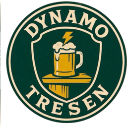

Meine Spieler
Tabelle
| Platz | Team | Punkte |
|---|---|---|
| 1 |  Die Humorlosen Die Humorlosen | 36:0 |
| 2 |  Irish Skulls Steel Irish Skulls Steel | 30:9 |
| 3 |  DARTFABRIK STEEL DARTFABRIK STEEL | 26:10 |
| 4 | Dart Ost | 19:17 |
| 5 |  Double Trouble Steeldarters Double Trouble Steeldarters | 18:21 |
| 6 | Irish Skulls ;) Steel | 16:20 |
| 7 |  Dynamo Tresen | 10:29 |
| 8 | 2010er Steel | 6:30 |
| 9 | Braschtli's Darter 2 | 4:29 |
Letzte Ergebnisse
Nächste Spiele
- 30.11.Irish Skulls ;) Steel
Braschtli's Darter 2 - 30.11.Die Humorlosen
Dart Ost - 30.11.Dynamo Tresen
2010er Steel - 02.12.Irish Skulls ;) Steel
DARTFABRIK STEEL - 02.12.Double Trouble Steeldarters
Braschtli's Darter 2
Spieler des Monats
Zwischenstand November 2026
(Die Humorlosen)
11:1 · 92 % · Ø Gegner-Rang 34
Hall of Fame
Bestwerte der ganzen Liga.
Längste Siegesserie
16 SiegeDie Humorlosen
in FolgeMeiste Einzelsiege
42 SiegeIrish Skulls Steel
42:10Beste Siegquote
100 %Dynamo Tresen
12:0Stärkster bezwungener Gegner
Rang 1Double Trouble Steeldarters
gegen Michael Loser (Die Humorlosen)Spieler
Nur Einzel. Spaltenköpfe zum Sortieren anklicken. Punkte: 2:0 = 4, 2:1 = 3, 1:2 = 1, 0:2 = 0. Ranglistenwert = Punkte² / (4 · Spiele).
| Spieler | Rang | Spiele | Bilanz | Punkte | Rangl.-Wert | Quote | Ø Gegner | Rang 1–10 | 11–30 | 31+ |
|---|---|---|---|---|---|---|---|---|---|---|
| 6 | 36 | 28:8 | 102 | 72.2 | 78 % | 28.0 | 6:3 | 5:5 | 17:0 | |
| 14 | 33 | 21:12 | 82 | 50.9 | 64 % | 31.6 | 1:7 | 4:3 | 16:2 | |
| 20 | 29 | 18:11 | 70 | 42.2 | 62 % | 27.3 | 3:3 | 6:6 | 9:2 | |
| 35 | 22 | 12:10 | 46 | 24.0 | 55 % | 22.0 | 4:5 | 1:4 | 7:1 | |
| 42 | 34 | 11:23 | 43 | 13.6 | 32 % | 23.5 | 0:10 | 4:7 | 7:6 | |
| 45 | 21 | 8:13 | 30 | 10.7 | 38 % | 27.0 | 0:5 | 3:3 | 5:5 | |
| 53 | 19 | 4:15 | 15 | 3.0 | 21 % | 28.3 | 0:3 | 0:7 | 4:5 | |
| 57 | 14 | 2:12 | 11 | 2.2 | 14 % | 34.5 | 0:2 | 1:1 | 1:9 | |
| Team | 208 | 104:104 | 399 | 50 % | 27.5 | 14:38 | 24:36 | 66:30 |
Heim und Auswärts
Einzelbilanz pro Spieler (Siege:Niederlagen).
| Spieler | Heim | Auswärts |
|---|---|---|
| Christoph Wildermuth | 12:4 | 16:4 |
| Nevio Bachmann | 11:5 | 10:7 |
| Juliano Goncalves da Costa | 7:0 | 11:11 |
| Daniel Laszlo Sandor | 8:6 | 4:4 |
| Kevin Notter | 6:12 | 5:11 |
| Elia Tanner | 4:7 | 4:6 |
| Pascal Maulaz | 2:6 | 2:9 |
| Tobias Fiedler | 1:5 | 1:7 |
Form
Letzte Ergebnisse von links (älter) nach rechts (neuer). S = Sieg, N = Niederlage. Trend: ▲ letzte Ergebnisse mindestens 10 Prozentpunkte besser als die Gesamtquote, ▼ mindestens 10 schlechter. Die Kurve zeigt die Siegquote nach jedem Spiel.
| Spieler | Letzte 5 | Bilanz | Quote gesamt | Trend | Verlauf |
|---|---|---|---|---|---|
| Christoph Wildermuth | SNSSS | 4:1 | 78 % | – | |
| Nevio Bachmann | SSSSN | 4:1 | 64 % | ▲ | |
| Juliano Goncalves da Costa | SSNNN | 2:3 | 62 % | ▼ | |
| Daniel Laszlo Sandor | NSNNS | 2:3 | 55 % | ▼ | |
| Elia Tanner | NNSNN | 1:4 | 38 % | ▼ | |
| Pascal Maulaz | NNSNN | 1:4 | 21 % | – | |
| Tobias Fiedler | NNNNS | 1:4 | 14 % | – | |
| Kevin Notter | NNNNN | 0:5 | 32 % | ▼ |
Rangverlauf
Veränderung seit 21.11.2026 (▲ besser, ▼ schlechter). Die Aufzeichnung läuft seit 05.11.2026. Die Kurve zeigt den Rang, oben ist Rang 1.
| Spieler | Rang heute | Veränderung | Verlauf |
|---|---|---|---|
| Christoph Wildermuth | 6 | ▼ 1 | |
| Nevio Bachmann | 14 | ▼ 2 | |
| Juliano Goncalves da Costa | 20 | ▲ 1 | |
| Daniel Laszlo Sandor | 35 | 0 | |
| Kevin Notter | 42 | ▼ 3 | |
| Elia Tanner | 45 | ▼ 3 | |
| Pascal Maulaz | 53 | ▼ 1 | |
| Tobias Fiedler | 57 | ▼ 1 |
| Spieler | Rang | Spiele | Bilanz | Punkte | Rangl.-Wert | Quote | Ø Gegner | Rang 1–10 | 11–30 | 31+ |
|---|---|---|---|---|---|---|---|---|---|---|
| 1 | 48 | 41:7 | 156 | 126.8 | 85 % | 31.1 | 4:2 | 15:4 | 22:1 | |
| 2 | 44 | 38:6 | 145 | 119.5 | 86 % | 30.0 | 5:1 | 14:4 | 19:1 | |
| 4 | 35 | 32:3 | 125 | 111.6 | 91 % | 32.2 | 2:1 | 12:2 | 18:0 | |
| 11 | 27 | 22:5 | 79 | 57.8 | 81 % | 34.9 | 2:1 | 4:4 | 16:0 | |
| 22 | 20 | 14:6 | 57 | 40.6 | 70 % | 28.4 | 0:3 | 7:3 | 7:0 | |
| 32 | 18 | 10:8 | 43 | 25.7 | 56 % | 30.1 | 0:3 | 4:3 | 6:2 | |
| Team | 192 | 157:35 | 605 | 82 % | 31.2 | 13:11 | 56:20 | 88:4 |
Heim und Auswärts
Einzelbilanz pro Spieler (Siege:Niederlagen).
| Spieler | Heim | Auswärts |
|---|---|---|
| Michael Loser | 21:3 | 20:4 |
| Valentin Matt | 18:2 | 20:4 |
| Martin Seidelmann | 15:3 | 17:0 |
| Luigino Gasperina | 10:2 | 12:3 |
| David Laritz | 8:4 | 6:2 |
| Stefan Pfeifer | 7:3 | 3:5 |
Form
Letzte Ergebnisse von links (älter) nach rechts (neuer). S = Sieg, N = Niederlage. Trend: ▲ letzte Ergebnisse mindestens 10 Prozentpunkte besser als die Gesamtquote, ▼ mindestens 10 schlechter. Die Kurve zeigt die Siegquote nach jedem Spiel.
| Spieler | Letzte 5 | Bilanz | Quote gesamt | Trend | Verlauf |
|---|---|---|---|---|---|
| Martin Seidelmann | SSSSS | 5:0 | 91 % | – | |
| Luigino Gasperina | SSSSS | 5:0 | 81 % | ▲ | |
| Michael Loser | SSNSS | 4:1 | 85 % | – | |
| Valentin Matt | NNSSS | 3:2 | 86 % | ▼ | |
| David Laritz | NSSNS | 3:2 | 70 % | ▼ | |
| Stefan Pfeifer | SNNNN | 1:4 | 56 % | ▼ |
Rangverlauf
Veränderung seit 21.11.2026 (▲ besser, ▼ schlechter). Die Aufzeichnung läuft seit 05.11.2026. Die Kurve zeigt den Rang, oben ist Rang 1.
| Spieler | Rang heute | Veränderung | Verlauf |
|---|---|---|---|
| Michael Loser | 1 | 0 | |
| Valentin Matt | 2 | 0 | |
| Martin Seidelmann | 4 | ▼ 1 | |
| Luigino Gasperina | 11 | ▼ 2 | |
| David Laritz | 22 | ▼ 3 | |
| Stefan Pfeifer | 32 | ▼ 2 |
| Spieler | Rang | Spiele | Bilanz | Punkte | Rangl.-Wert | Quote | Ø Gegner | Rang 1–10 | 11–30 | 31+ |
|---|---|---|---|---|---|---|---|---|---|---|
| 3 | 52 | 42:10 | 155 | 115.5 | 81 % | 29.2 | 7:4 | 12:6 | 23:0 | |
| 16 | 52 | 23:29 | 97 | 45.2 | 44 % | 30.6 | 3:8 | 4:12 | 16:9 | |
| 19 | 39 | 21:18 | 82 | 43.1 | 54 % | 29.3 | 1:8 | 5:6 | 15:4 | |
| 26 | 10 | 9:1 | 37 | 34.2 | 90 % | 18.7 | 4:0 | 2:1 | 3:0 | |
| 33 | 12 | 9:3 | 35 | 25.5 | 75 % | 31.8 | 0:2 | 3:1 | 6:0 | |
| 43 | 32 | 8:24 | 39 | 11.9 | 25 % | 27.5 | 0:7 | 1:12 | 7:5 | |
| 49 | 11 | 4:7 | 18 | 7.4 | 36 % | 33.3 | 0:2 | 1:3 | 3:2 | |
| Team | 208 | 116:92 | 463 | 56 % | 29.2 | 15:31 | 28:41 | 73:20 |
Heim und Auswärts
Einzelbilanz pro Spieler (Siege:Niederlagen).
| Spieler | Heim | Auswärts |
|---|---|---|
| Felix Schwager | 19:5 | 23:5 |
| Elia Meyer | 11:13 | 12:16 |
| Roberto Lisitsov | 10:9 | 11:9 |
| Joel Breitenmoser | 2:0 | 7:1 |
| Mic Andres | 6:2 | 3:1 |
| Martin Vomend | 5:11 | 3:13 |
| Stephan Badschauer | 1:2 | 3:5 |
Form
Letzte Ergebnisse von links (älter) nach rechts (neuer). S = Sieg, N = Niederlage. Trend: ▲ letzte Ergebnisse mindestens 10 Prozentpunkte besser als die Gesamtquote, ▼ mindestens 10 schlechter. Die Kurve zeigt die Siegquote nach jedem Spiel.
| Spieler | Letzte 5 | Bilanz | Quote gesamt | Trend | Verlauf |
|---|---|---|---|---|---|
| Joel Breitenmoser | SSSSS | 5:0 | 90 % | ▲ | |
| Mic Andres | SSSSS | 5:0 | 75 % | ▲ | |
| Felix Schwager | NSSSN | 3:2 | 81 % | ▼ | |
| Elia Meyer | SNSNN | 2:3 | 44 % | – | |
| Roberto Lisitsov | SNSNN | 2:3 | 54 % | ▼ | |
| Martin Vomend | NNSSN | 2:3 | 25 % | ▲ | |
| Stephan Badschauer | NNNSN | 1:4 | 36 % | ▼ |
Rangverlauf
Veränderung seit 21.11.2026 (▲ besser, ▼ schlechter). Die Aufzeichnung läuft seit 05.11.2026. Die Kurve zeigt den Rang, oben ist Rang 1.
| Spieler | Rang heute | Veränderung | Verlauf |
|---|---|---|---|
| Felix Schwager | 3 | ▲ 1 | |
| Elia Meyer | 16 | 0 | |
| Roberto Lisitsov | 19 | ▼ 1 | |
| Joel Breitenmoser | 26 | ▼ 1 | |
| Mic Andres | 33 | ▼ 2 | |
| Martin Vomend | 43 | ▲ 2 | |
| Stephan Badschauer | 49 | 0 |
| Spieler | Rang | Spiele | Bilanz | Punkte | Rangl.-Wert | Quote | Ø Gegner | Rang 1–10 | 11–30 | 31+ |
|---|---|---|---|---|---|---|---|---|---|---|
| 15 | 24 | 17:7 | 69 | 49.6 | 71 % | 27.9 | 3:3 | 7:2 | 7:2 | |
| 17 | 28 | 19:9 | 71 | 45.0 | 68 % | 28.0 | 2:5 | 8:1 | 9:3 | |
| 18 | 37 | 20:17 | 81 | 44.3 | 54 % | 27.4 | 3:6 | 6:8 | 11:3 | |
| 21 | 27 | 18:9 | 67 | 41.6 | 67 % | 28.5 | 3:4 | 5:5 | 10:0 | |
| 24 | 12 | 11:1 | 42 | 36.8 | 92 % | 34.9 | 1:0 | 2:1 | 8:0 | |
| 34 | 12 | 9:3 | 35 | 25.5 | 75 % | 25.4 | 1:3 | 4:0 | 4:0 | |
| 46 | 34 | 9:25 | 38 | 10.6 | 26 % | 27.7 | 0:9 | 2:9 | 7:7 | |
| 48 | 7 | 4:3 | 17 | 10.3 | 57 % | 40.6 | 0:0 | 0:2 | 4:1 | |
| 54 | 9 | 3:6 | 10 | 2.8 | 33 % | 19.8 | 1:2 | 1:3 | 1:1 | |
| 66 | 2 | 0:2 | 0 | 0.0 | 0 % | 13.0 | 0:0 | 0:2 | 0:0 | |
| Team | 192 | 110:82 | 430 | 57 % | 28.1 | 14:32 | 35:33 | 61:17 |
Heim und Auswärts
Einzelbilanz pro Spieler (Siege:Niederlagen).
| Spieler | Heim | Auswärts |
|---|---|---|
| Daniel Strasser | 9:1 | 8:6 |
| Markus Müller | 13:3 | 6:6 |
| Alex Grohmann | 10:13 | 10:4 |
| Adam Montgomery | 15:4 | 3:5 |
| Lars Meier | 4:0 | 7:1 |
| Lukas Hollenstein | 5:1 | 4:2 |
| Jean-Dominique Bollhalder | 7:12 | 2:13 |
| Patrick Frank | 4:3 | 0:0 |
| Franco Trombetta | 3:4 | 0:2 |
| Lars Gamper | 0:1 | 0:1 |
Form
Letzte Ergebnisse von links (älter) nach rechts (neuer). S = Sieg, N = Niederlage. Trend: ▲ letzte Ergebnisse mindestens 10 Prozentpunkte besser als die Gesamtquote, ▼ mindestens 10 schlechter. Die Kurve zeigt die Siegquote nach jedem Spiel.
| Spieler | Letzte 5 | Bilanz | Quote gesamt | Trend | Verlauf |
|---|---|---|---|---|---|
| Lars Meier | SSSSS | 5:0 | 92 % | – | |
| Lukas Hollenstein | SSSNS | 4:1 | 75 % | – | |
| Markus Müller | SSNNS | 3:2 | 68 % | – | |
| Alex Grohmann | NNSSS | 3:2 | 54 % | – | |
| Adam Montgomery | SNNSS | 3:2 | 67 % | – | |
| Patrick Frank | NNSSS | 3:2 | 57 % | – | |
| Franco Trombetta | NSSSN | 3:2 | 33 % | ▲ | |
| Daniel Strasser | NNNSS | 2:3 | 71 % | ▼ | |
| Jean-Dominique Bollhalder | NNSNN | 1:4 | 26 % | – | |
| Lars Gamper | NN | 0:2 | 0 % | – |
Rangverlauf
Veränderung seit 21.11.2026 (▲ besser, ▼ schlechter). Die Aufzeichnung läuft seit 05.11.2026. Die Kurve zeigt den Rang, oben ist Rang 1.
| Spieler | Rang heute | Veränderung | Verlauf |
|---|---|---|---|
| Daniel Strasser | 15 | ▼ 2 | |
| Markus Müller | 17 | 0 | |
| Alex Grohmann | 18 | ▲ 4 | |
| Adam Montgomery | 21 | ▼ 1 | |
| Lars Meier | 24 | 0 | |
| Lukas Hollenstein | 34 | ▲ 3 | |
| Jean-Dominique Bollhalder | 46 | ▼ 3 | |
| Patrick Frank | 48 | ▼ 4 | |
| Franco Trombetta | 54 | ▼ 1 | |
| Lars Gamper | 66 | 0 |
| Spieler | Rang | Spiele | Bilanz | Punkte | Rangl.-Wert | Quote | Ø Gegner | Rang 1–10 | 11–30 | 31+ |
|---|---|---|---|---|---|---|---|---|---|---|
| 5 | 36 | 28:8 | 109 | 82.5 | 78 % | 31.0 | 2:3 | 7:5 | 19:0 | |
| 8 | 36 | 24:12 | 95 | 62.7 | 67 % | 32.6 | 1:3 | 6:7 | 17:2 | |
| 27 | 31 | 17:14 | 64 | 33.0 | 55 % | 28.2 | 2:4 | 3:8 | 12:2 | |
| 28 | 37 | 16:21 | 69 | 32.2 | 43 % | 26.4 | 1:8 | 5:9 | 10:4 | |
| 36 | 23 | 12:11 | 47 | 24.0 | 52 % | 29.1 | 0:4 | 4:3 | 8:4 | |
| 59 | 16 | 1:15 | 10 | 1.6 | 6 % | 23.9 | 0:4 | 0:7 | 1:4 | |
| 62 | 12 | 1:11 | 5 | 0.5 | 8 % | 22.9 | 0:4 | 0:4 | 1:3 | |
| 63 | 1 | 0:1 | 1 | 0.2 | 0 % | 64.0 | 0:0 | 0:0 | 0:1 | |
| Team | 192 | 99:93 | 400 | 52 % | 28.8 | 6:30 | 25:43 | 68:20 |
Heim und Auswärts
Einzelbilanz pro Spieler (Siege:Niederlagen).
| Spieler | Heim | Auswärts |
|---|---|---|
| Silvan Bücheli | 15:5 | 13:3 |
| Phillipe Graf | 11:7 | 13:5 |
| Alessio Demarchi | 8:11 | 9:3 |
| Joel Ghirlanda | 10:13 | 6:8 |
| Jan Müller | 10:9 | 2:2 |
| Daniel Forrer | 1:7 | 0:8 |
| Katja Koch | 0:4 | 1:7 |
| Manuel Fischer | 0:1 | 0:0 |
Form
Letzte Ergebnisse von links (älter) nach rechts (neuer). S = Sieg, N = Niederlage. Trend: ▲ letzte Ergebnisse mindestens 10 Prozentpunkte besser als die Gesamtquote, ▼ mindestens 10 schlechter. Die Kurve zeigt die Siegquote nach jedem Spiel.
| Spieler | Letzte 5 | Bilanz | Quote gesamt | Trend | Verlauf |
|---|---|---|---|---|---|
| Silvan Bücheli | SSSSS | 5:0 | 78 % | ▲ | |
| Phillipe Graf | NSSSN | 3:2 | 67 % | – | |
| Alessio Demarchi | SNSSN | 3:2 | 55 % | – | |
| Joel Ghirlanda | NNSSS | 3:2 | 43 % | ▲ | |
| Jan Müller | SNNSS | 3:2 | 52 % | – | |
| Katja Koch | NNNNS | 1:4 | 8 % | ▲ | |
| Daniel Forrer | NNNNN | 0:5 | 6 % | – | |
| Manuel Fischer | N | 0:1 | 0 % | – | – |
Rangverlauf
Veränderung seit 21.11.2026 (▲ besser, ▼ schlechter). Die Aufzeichnung läuft seit 05.11.2026. Die Kurve zeigt den Rang, oben ist Rang 1.
| Spieler | Rang heute | Veränderung | Verlauf |
|---|---|---|---|
| Silvan Bücheli | 5 | ▲ 1 | |
| Phillipe Graf | 8 | ▲ 2 | |
| Alessio Demarchi | 27 | ▼ 1 | |
| Joel Ghirlanda | 28 | ▲ 4 | |
| Jan Müller | 36 | ▼ 2 | |
| Daniel Forrer | 59 | ▼ 1 | |
| Katja Koch | 62 | ▼ 1 | |
| Manuel Fischer | 63 | 0 |
| Spieler | Rang | Spiele | Bilanz | Punkte | Rangl.-Wert | Quote | Ø Gegner | Rang 1–10 | 11–30 | 31+ |
|---|---|---|---|---|---|---|---|---|---|---|
| 7 | 44 | 29:15 | 112 | 71.3 | 66 % | 25.6 | 2:8 | 11:5 | 16:2 | |
| 13 | 43 | 23:20 | 97 | 54.7 | 53 % | 24.3 | 4:7 | 10:5 | 9:8 | |
| 29 | 33 | 14:19 | 62 | 29.1 | 42 % | 23.4 | 4:6 | 3:9 | 7:4 | |
| 41 | 44 | 11:33 | 49 | 13.6 | 25 % | 26.4 | 1:9 | 2:13 | 8:11 | |
| 50 | 16 | 5:11 | 19 | 5.6 | 31 % | 27.4 | 1:3 | 2:2 | 2:6 | |
| 56 | 12 | 3:9 | 11 | 2.5 | 25 % | 23.0 | 0:4 | 2:3 | 1:2 | |
| Team | 192 | 85:107 | 350 | 44 % | 25.1 | 12:37 | 30:37 | 43:33 |
Heim und Auswärts
Einzelbilanz pro Spieler (Siege:Niederlagen).
| Spieler | Heim | Auswärts |
|---|---|---|
| Martin Gerber | 15:5 | 14:10 |
| Marco Müller | 12:8 | 11:12 |
| Matthias Sutter | 6:6 | 8:13 |
| Chris Malang | 2:18 | 9:15 |
| Naser Toja | 3:3 | 2:8 |
| Demian Senn | 0:2 | 3:7 |
Form
Letzte Ergebnisse von links (älter) nach rechts (neuer). S = Sieg, N = Niederlage. Trend: ▲ letzte Ergebnisse mindestens 10 Prozentpunkte besser als die Gesamtquote, ▼ mindestens 10 schlechter. Die Kurve zeigt die Siegquote nach jedem Spiel.
| Spieler | Letzte 5 | Bilanz | Quote gesamt | Trend | Verlauf |
|---|---|---|---|---|---|
| Martin Gerber | SSNSS | 4:1 | 66 % | ▲ | |
| Chris Malang | SNSSS | 4:1 | 25 % | ▲ | |
| Marco Müller | SNNNS | 2:3 | 53 % | ▼ | |
| Naser Toja | NSNNS | 2:3 | 31 % | – | |
| Matthias Sutter | SNNNN | 1:4 | 42 % | ▼ | |
| Demian Senn | NSNNN | 1:4 | 25 % | – |
Rangverlauf
Veränderung seit 21.11.2026 (▲ besser, ▼ schlechter). Die Aufzeichnung läuft seit 05.11.2026. Die Kurve zeigt den Rang, oben ist Rang 1.
| Spieler | Rang heute | Veränderung | Verlauf |
|---|---|---|---|
| Martin Gerber | 7 | 0 | |
| Marco Müller | 13 | ▼ 2 | |
| Matthias Sutter | 29 | ▼ 1 | |
| Chris Malang | 41 | ▲ 5 | |
| Naser Toja | 50 | ▲ 1 | |
| Demian Senn | 56 | ▲ 3 |
| Spieler | Rang | Spiele | Bilanz | Punkte | Rangl.-Wert | Quote | Ø Gegner | Rang 1–10 | 11–30 | 31+ |
|---|---|---|---|---|---|---|---|---|---|---|
| 9 | 28 | 22:6 | 83 | 61.5 | 79 % | 30.8 | 3:1 | 7:2 | 12:3 | |
| 23 | 12 | 12:0 | 42 | 36.8 | 100 % | 29.9 | 1:0 | 6:0 | 5:0 | |
| 30 | 40 | 17:23 | 68 | 28.9 | 42 % | 22.7 | 5:6 | 5:12 | 7:5 | |
| 38 | 44 | 12:32 | 56 | 17.8 | 27 % | 25.0 | 0:11 | 2:15 | 10:6 | |
| 47 | 20 | 7:13 | 29 | 10.5 | 35 % | 27.4 | 0:3 | 3:6 | 4:4 | |
| 52 | 30 | 5:25 | 23 | 4.4 | 17 % | 19.4 | 0:9 | 2:12 | 3:4 | |
| 55 | 13 | 3:10 | 12 | 2.8 | 23 % | 27.5 | 1:1 | 0:7 | 2:2 | |
| 61 | 17 | 1:16 | 8 | 0.9 | 6 % | 18.2 | 0:7 | 0:6 | 1:3 | |
| 65 | 4 | 0:4 | 1 | 0.1 | 0 % | 12.0 | 0:2 | 0:1 | 0:1 | |
| Team | 208 | 79:129 | 322 | 38 % | 24.4 | 10:40 | 25:61 | 44:28 |
Heim und Auswärts
Einzelbilanz pro Spieler (Siege:Niederlagen).
| Spieler | Heim | Auswärts |
|---|---|---|
| Fabian Ziegler | 7:3 | 15:3 |
| Marco Schnider | 4:0 | 8:0 |
| Oliver Hutter | 7:11 | 10:12 |
| Jonas Herbinger | 7:15 | 5:17 |
| Patric Fricker | 6:4 | 1:9 |
| Fabian Aerne | 4:12 | 1:13 |
| Cedric Hutter | 3:7 | 0:3 |
| Angelo Michielin | 1:5 | 0:11 |
| Ali Abdallah | 0:0 | 0:4 |
Form
Letzte Ergebnisse von links (älter) nach rechts (neuer). S = Sieg, N = Niederlage. Trend: ▲ letzte Ergebnisse mindestens 10 Prozentpunkte besser als die Gesamtquote, ▼ mindestens 10 schlechter. Die Kurve zeigt die Siegquote nach jedem Spiel.
| Spieler | Letzte 5 | Bilanz | Quote gesamt | Trend | Verlauf |
|---|---|---|---|---|---|
| Marco Schnider | SSSSS | 5:0 | 100 % | – | |
| Fabian Ziegler | SNSSN | 3:2 | 79 % | ▼ | |
| Jonas Herbinger | NSSNN | 2:3 | 27 % | ▲ | |
| Patric Fricker | NNSNS | 2:3 | 35 % | – | |
| Oliver Hutter | SNNNN | 1:4 | 42 % | ▼ | |
| Angelo Michielin | NNNSN | 1:4 | 6 % | ▲ | |
| Fabian Aerne | NNNNN | 0:5 | 17 % | ▼ | |
| Cedric Hutter | NNNNN | 0:5 | 23 % | ▼ | |
| Ali Abdallah | NNNN | 0:4 | 0 % | – |
Rangverlauf
Veränderung seit 21.11.2026 (▲ besser, ▼ schlechter). Die Aufzeichnung läuft seit 05.11.2026. Die Kurve zeigt den Rang, oben ist Rang 1.
| Spieler | Rang heute | Veränderung | Verlauf |
|---|---|---|---|
| Fabian Ziegler | 9 | ▼ 1 | |
| Marco Schnider | 23 | 0 | |
| Oliver Hutter | 30 | ▼ 1 | |
| Jonas Herbinger | 38 | ▲ 2 | |
| Patric Fricker | 47 | ▲ 1 | |
| Fabian Aerne | 52 | ▼ 2 | |
| Cedric Hutter | 55 | ▼ 1 | |
| Angelo Michielin | 61 | ▲ 1 | |
| Ali Abdallah | 65 | 0 |
| Spieler | Rang | Spiele | Bilanz | Punkte | Rangl.-Wert | Quote | Ø Gegner | Rang 1–10 | 11–30 | 31+ |
|---|---|---|---|---|---|---|---|---|---|---|
| 25 | 44 | 20:24 | 79 | 35.5 | 45 % | 23.3 | 3:11 | 8:8 | 9:5 | |
| 31 | 42 | 15:27 | 67 | 26.7 | 36 % | 25.6 | 1:13 | 2:10 | 12:4 | |
| 37 | 33 | 11:22 | 49 | 18.2 | 33 % | 23.2 | 1:12 | 4:4 | 6:6 | |
| 39 | 12 | 7:5 | 28 | 16.3 | 58 % | 28.1 | 0:2 | 3:2 | 4:1 | |
| 40 | 36 | 10:26 | 47 | 15.3 | 28 % | 26.9 | 0:9 | 3:9 | 7:8 | |
| 51 | 21 | 5:16 | 20 | 4.8 | 24 % | 25.1 | 0:7 | 2:5 | 3:4 | |
| 60 | 4 | 1:3 | 4 | 1.0 | 25 % | 34.5 | 0:1 | 0:1 | 1:1 | |
| Team | 192 | 69:123 | 294 | 36 % | 25.2 | 5:55 | 22:39 | 42:29 |
Heim und Auswärts
Einzelbilanz pro Spieler (Siege:Niederlagen).
| Spieler | Heim | Auswärts |
|---|---|---|
| Marc Brassel | 10:14 | 10:10 |
| Serge Schiess | 9:13 | 6:14 |
| Luis Munoz | 4:9 | 7:13 |
| Jonathan Palumbo | 0:0 | 7:5 |
| Lucky Aebischer | 1:17 | 9:9 |
| Marcel Staubli | 2:13 | 3:3 |
| Tom Lanz | 1:3 | 0:0 |
Form
Letzte Ergebnisse von links (älter) nach rechts (neuer). S = Sieg, N = Niederlage. Trend: ▲ letzte Ergebnisse mindestens 10 Prozentpunkte besser als die Gesamtquote, ▼ mindestens 10 schlechter. Die Kurve zeigt die Siegquote nach jedem Spiel.
| Spieler | Letzte 5 | Bilanz | Quote gesamt | Trend | Verlauf |
|---|---|---|---|---|---|
| Jonathan Palumbo | NSNSS | 3:2 | 58 % | – | |
| Marcel Staubli | SSNSN | 3:2 | 24 % | ▲ | |
| Marc Brassel | NNNSS | 2:3 | 45 % | – | |
| Serge Schiess | NSSNN | 2:3 | 36 % | – | |
| Luis Munoz | NSNSN | 2:3 | 33 % | – | |
| Tom Lanz | NSNN | 1:3 | 25 % | – | |
| Lucky Aebischer | NNNNS | 1:4 | 28 % | – |
Rangverlauf
Veränderung seit 21.11.2026 (▲ besser, ▼ schlechter). Die Aufzeichnung läuft seit 05.11.2026. Die Kurve zeigt den Rang, oben ist Rang 1.
| Spieler | Rang heute | Veränderung | Verlauf |
|---|---|---|---|
| Marc Brassel | 25 | ▲ 2 | |
| Serge Schiess | 31 | ▲ 2 | |
| Luis Munoz | 37 | ▼ 1 | |
| Jonathan Palumbo | 39 | ▼ 1 | |
| Lucky Aebischer | 40 | ▲ 1 | |
| Marcel Staubli | 51 | ▲ 4 | |
| Tom Lanz | 60 | 0 |
| Spieler | Rang | Spiele | Bilanz | Punkte | Rangl.-Wert | Quote | Ø Gegner | Rang 1–10 | 11–30 | 31+ |
|---|---|---|---|---|---|---|---|---|---|---|
| 10 | 44 | 26:18 | 101 | 58.0 | 59 % | 26.1 | 2:8 | 9:8 | 15:2 | |
| 12 | 44 | 25:19 | 99 | 55.7 | 57 % | 26.5 | 2:8 | 10:7 | 13:4 | |
| 44 | 32 | 7:25 | 39 | 11.9 | 22 % | 24.8 | 0:9 | 1:10 | 6:6 | |
| 58 | 18 | 2:16 | 12 | 2.0 | 11 % | 25.1 | 0:2 | 0:10 | 2:4 | |
| 64 | 38 | 1:37 | 6 | 0.2 | 3 % | 26.8 | 0:9 | 0:12 | 1:16 | |
| Team | 176 | 61:115 | 257 | 35 % | 26.0 | 4:36 | 20:47 | 37:32 |
Heim und Auswärts
Einzelbilanz pro Spieler (Siege:Niederlagen).
| Spieler | Heim | Auswärts |
|---|---|---|
| Richard Sieber | 13:11 | 13:7 |
| Christian Hutter | 12:12 | 13:7 |
| Heiri Kuratli | 2:14 | 5:11 |
| Sabrina Hutter | 2:10 | 0:6 |
| Andreas Hutter | 0:20 | 1:17 |
Form
Letzte Ergebnisse von links (älter) nach rechts (neuer). S = Sieg, N = Niederlage. Trend: ▲ letzte Ergebnisse mindestens 10 Prozentpunkte besser als die Gesamtquote, ▼ mindestens 10 schlechter. Die Kurve zeigt die Siegquote nach jedem Spiel.
| Spieler | Letzte 5 | Bilanz | Quote gesamt | Trend | Verlauf |
|---|---|---|---|---|---|
| Richard Sieber | SSSSS | 5:0 | 59 % | ▲ | |
| Christian Hutter | SSSNS | 4:1 | 57 % | ▲ | |
| Heiri Kuratli | NNSSN | 2:3 | 22 % | ▲ | |
| Sabrina Hutter | NNNNN | 0:5 | 11 % | ▼ | |
| Andreas Hutter | NNNNN | 0:5 | 3 % | – |
Rangverlauf
Veränderung seit 21.11.2026 (▲ besser, ▼ schlechter). Die Aufzeichnung läuft seit 05.11.2026. Die Kurve zeigt den Rang, oben ist Rang 1.
| Spieler | Rang heute | Veränderung | Verlauf |
|---|---|---|---|
| Richard Sieber | 10 | ▲ 5 | |
| Christian Hutter | 12 | ▲ 2 | |
| Heiri Kuratli | 44 | ▲ 3 | |
| Sabrina Hutter | 58 | ▼ 1 | |
| Andreas Hutter | 64 | 0 |
| Spieler | Verein | Rang | Spiele | Bilanz | Punkte | Rangl.-Wert | Quote | Ø Gegner | Rang 1–10 | 11–30 | 31+ |
|---|---|---|---|---|---|---|---|---|---|---|---|
| Die Humorlosen | 1 | 48 | 41:7 | 156 | 126.8 | 85 % | 31.1 | 4:2 | 15:4 | 22:1 | |
| Die Humorlosen | 2 | 44 | 38:6 | 145 | 119.5 | 86 % | 30.0 | 5:1 | 14:4 | 19:1 | |
| Irish Skulls Steel | 3 | 52 | 42:10 | 155 | 115.5 | 81 % | 29.2 | 7:4 | 12:6 | 23:0 | |
| Die Humorlosen | 4 | 35 | 32:3 | 125 | 111.6 | 91 % | 32.2 | 2:1 | 12:2 | 18:0 | |
| Dart Ost | 5 | 36 | 28:8 | 109 | 82.5 | 78 % | 31.0 | 2:3 | 7:5 | 19:0 | |
| Double Trouble Steeldarters | 6 | 36 | 28:8 | 102 | 72.2 | 78 % | 28.0 | 6:3 | 5:5 | 17:0 | |
| Irish Skulls ;) Steel | 7 | 44 | 29:15 | 112 | 71.3 | 66 % | 25.6 | 2:8 | 11:5 | 16:2 | |
| Dart Ost | 8 | 36 | 24:12 | 95 | 62.7 | 67 % | 32.6 | 1:3 | 6:7 | 17:2 | |
| Dynamo Tresen | 9 | 28 | 22:6 | 83 | 61.5 | 79 % | 30.8 | 3:1 | 7:2 | 12:3 | |
| Braschtli's Darter 2 | 10 | 44 | 26:18 | 101 | 58.0 | 59 % | 26.1 | 2:8 | 9:8 | 15:2 | |
| Die Humorlosen | 11 | 27 | 22:5 | 79 | 57.8 | 81 % | 34.9 | 2:1 | 4:4 | 16:0 | |
| Braschtli's Darter 2 | 12 | 44 | 25:19 | 99 | 55.7 | 57 % | 26.5 | 2:8 | 10:7 | 13:4 | |
| Irish Skulls ;) Steel | 13 | 43 | 23:20 | 97 | 54.7 | 53 % | 24.3 | 4:7 | 10:5 | 9:8 | |
| Double Trouble Steeldarters | 14 | 33 | 21:12 | 82 | 50.9 | 64 % | 31.6 | 1:7 | 4:3 | 16:2 | |
| DARTFABRIK STEEL | 15 | 24 | 17:7 | 69 | 49.6 | 71 % | 27.9 | 3:3 | 7:2 | 7:2 | |
| Irish Skulls Steel | 16 | 52 | 23:29 | 97 | 45.2 | 44 % | 30.6 | 3:8 | 4:12 | 16:9 | |
| DARTFABRIK STEEL | 17 | 28 | 19:9 | 71 | 45.0 | 68 % | 28.0 | 2:5 | 8:1 | 9:3 | |
| DARTFABRIK STEEL | 18 | 37 | 20:17 | 81 | 44.3 | 54 % | 27.4 | 3:6 | 6:8 | 11:3 | |
| Irish Skulls Steel | 19 | 39 | 21:18 | 82 | 43.1 | 54 % | 29.3 | 1:8 | 5:6 | 15:4 | |
| Double Trouble Steeldarters | 20 | 29 | 18:11 | 70 | 42.2 | 62 % | 27.3 | 3:3 | 6:6 | 9:2 | |
| DARTFABRIK STEEL | 21 | 27 | 18:9 | 67 | 41.6 | 67 % | 28.5 | 3:4 | 5:5 | 10:0 | |
| Die Humorlosen | 22 | 20 | 14:6 | 57 | 40.6 | 70 % | 28.4 | 0:3 | 7:3 | 7:0 | |
| Dynamo Tresen | 23 | 12 | 12:0 | 42 | 36.8 | 100 % | 29.9 | 1:0 | 6:0 | 5:0 | |
| DARTFABRIK STEEL | 24 | 12 | 11:1 | 42 | 36.8 | 92 % | 34.9 | 1:0 | 2:1 | 8:0 | |
| 2010er Steel | 25 | 44 | 20:24 | 79 | 35.5 | 45 % | 23.3 | 3:11 | 8:8 | 9:5 | |
| Irish Skulls Steel | 26 | 10 | 9:1 | 37 | 34.2 | 90 % | 18.7 | 4:0 | 2:1 | 3:0 | |
| Dart Ost | 27 | 31 | 17:14 | 64 | 33.0 | 55 % | 28.2 | 2:4 | 3:8 | 12:2 | |
| Dart Ost | 28 | 37 | 16:21 | 69 | 32.2 | 43 % | 26.4 | 1:8 | 5:9 | 10:4 | |
| Irish Skulls ;) Steel | 29 | 33 | 14:19 | 62 | 29.1 | 42 % | 23.4 | 4:6 | 3:9 | 7:4 | |
| Dynamo Tresen | 30 | 40 | 17:23 | 68 | 28.9 | 42 % | 22.7 | 5:6 | 5:12 | 7:5 | |
| 2010er Steel | 31 | 42 | 15:27 | 67 | 26.7 | 36 % | 25.6 | 1:13 | 2:10 | 12:4 | |
| Die Humorlosen | 32 | 18 | 10:8 | 43 | 25.7 | 56 % | 30.1 | 0:3 | 4:3 | 6:2 | |
| Irish Skulls Steel | 33 | 12 | 9:3 | 35 | 25.5 | 75 % | 31.8 | 0:2 | 3:1 | 6:0 | |
| DARTFABRIK STEEL | 34 | 12 | 9:3 | 35 | 25.5 | 75 % | 25.4 | 1:3 | 4:0 | 4:0 | |
| Double Trouble Steeldarters | 35 | 22 | 12:10 | 46 | 24.0 | 55 % | 22.0 | 4:5 | 1:4 | 7:1 | |
| Dart Ost | 36 | 23 | 12:11 | 47 | 24.0 | 52 % | 29.1 | 0:4 | 4:3 | 8:4 | |
| 2010er Steel | 37 | 33 | 11:22 | 49 | 18.2 | 33 % | 23.2 | 1:12 | 4:4 | 6:6 | |
| Dynamo Tresen | 38 | 44 | 12:32 | 56 | 17.8 | 27 % | 25.0 | 0:11 | 2:15 | 10:6 | |
| 2010er Steel | 39 | 12 | 7:5 | 28 | 16.3 | 58 % | 28.1 | 0:2 | 3:2 | 4:1 | |
| 2010er Steel | 40 | 36 | 10:26 | 47 | 15.3 | 28 % | 26.9 | 0:9 | 3:9 | 7:8 | |
| Irish Skulls ;) Steel | 41 | 44 | 11:33 | 49 | 13.6 | 25 % | 26.4 | 1:9 | 2:13 | 8:11 | |
| Double Trouble Steeldarters | 42 | 34 | 11:23 | 43 | 13.6 | 32 % | 23.5 | 0:10 | 4:7 | 7:6 | |
| Irish Skulls Steel | 43 | 32 | 8:24 | 39 | 11.9 | 25 % | 27.5 | 0:7 | 1:12 | 7:5 | |
| Braschtli's Darter 2 | 44 | 32 | 7:25 | 39 | 11.9 | 22 % | 24.8 | 0:9 | 1:10 | 6:6 | |
| Double Trouble Steeldarters | 45 | 21 | 8:13 | 30 | 10.7 | 38 % | 27.0 | 0:5 | 3:3 | 5:5 | |
| DARTFABRIK STEEL | 46 | 34 | 9:25 | 38 | 10.6 | 26 % | 27.7 | 0:9 | 2:9 | 7:7 | |
| Dynamo Tresen | 47 | 20 | 7:13 | 29 | 10.5 | 35 % | 27.4 | 0:3 | 3:6 | 4:4 | |
| DARTFABRIK STEEL | 48 | 7 | 4:3 | 17 | 10.3 | 57 % | 40.6 | 0:0 | 0:2 | 4:1 | |
| Irish Skulls Steel | 49 | 11 | 4:7 | 18 | 7.4 | 36 % | 33.3 | 0:2 | 1:3 | 3:2 | |
| Irish Skulls ;) Steel | 50 | 16 | 5:11 | 19 | 5.6 | 31 % | 27.4 | 1:3 | 2:2 | 2:6 | |
| 2010er Steel | 51 | 21 | 5:16 | 20 | 4.8 | 24 % | 25.1 | 0:7 | 2:5 | 3:4 | |
| Dynamo Tresen | 52 | 30 | 5:25 | 23 | 4.4 | 17 % | 19.4 | 0:9 | 2:12 | 3:4 | |
| Double Trouble Steeldarters | 53 | 19 | 4:15 | 15 | 3.0 | 21 % | 28.3 | 0:3 | 0:7 | 4:5 | |
| DARTFABRIK STEEL | 54 | 9 | 3:6 | 10 | 2.8 | 33 % | 19.8 | 1:2 | 1:3 | 1:1 | |
| Dynamo Tresen | 55 | 13 | 3:10 | 12 | 2.8 | 23 % | 27.5 | 1:1 | 0:7 | 2:2 | |
| Irish Skulls ;) Steel | 56 | 12 | 3:9 | 11 | 2.5 | 25 % | 23.0 | 0:4 | 2:3 | 1:2 | |
| Double Trouble Steeldarters | 57 | 14 | 2:12 | 11 | 2.2 | 14 % | 34.5 | 0:2 | 1:1 | 1:9 | |
| Braschtli's Darter 2 | 58 | 18 | 2:16 | 12 | 2.0 | 11 % | 25.1 | 0:2 | 0:10 | 2:4 | |
| Dart Ost | 59 | 16 | 1:15 | 10 | 1.6 | 6 % | 23.9 | 0:4 | 0:7 | 1:4 | |
| 2010er Steel | 60 | 4 | 1:3 | 4 | 1.0 | 25 % | 34.5 | 0:1 | 0:1 | 1:1 | |
| Dynamo Tresen | 61 | 17 | 1:16 | 8 | 0.9 | 6 % | 18.2 | 0:7 | 0:6 | 1:3 | |
| Dart Ost | 62 | 12 | 1:11 | 5 | 0.5 | 8 % | 22.9 | 0:4 | 0:4 | 1:3 | |
| Dart Ost | 63 | 1 | 0:1 | 1 | 0.2 | 0 % | 64.0 | 0:0 | 0:0 | 0:1 | |
| Braschtli's Darter 2 | 64 | 38 | 1:37 | 6 | 0.2 | 3 % | 26.8 | 0:9 | 0:12 | 1:16 | |
| Dynamo Tresen | 65 | 4 | 0:4 | 1 | 0.1 | 0 % | 12.0 | 0:2 | 0:1 | 0:1 | |
| DARTFABRIK STEEL | 66 | 2 | 0:2 | 0 | 0.0 | 0 % | 13.0 | 0:0 | 0:2 | 0:0 |
Kein Spieler gefunden. Anderen Namen oder Verein probieren.
Team und Liga
Nächstes Spiel
in 4 TagenBraschtli's Darter 202.12.2026 · Heimspiel · Rorschach
Teamform
SNNNN1 Siege aus 5 Partienletzte 5 Partien, ältere links
- Platz
- 5
- Partien
- 13
- Siege
- 5
- Siege (Sudden Death)
- 1
- Niederlagen
- 6
- Niederlagen (Sudden Death)
- 1
- Punkte
- 18
- Spielbilanz (Einzel)
- 104:104
Nächstes Spiel: Braschtli's Darter 2
02.12.2026 · Heimspiel · Rorschach
Braschtli's Darter 2 steht auf Platz 9 mit 4 Punkten aus 11 Partien (Spiele 67:132).
Bisher gegen sie: 3:0 (28.09., Auswärts, Spiele 12:6).
Kader des Gegners anzeigen
Rang in der Einzelrangliste, Bilanz und Form (S/N). «Gegen euch» zeigt das Satzergebnis aus Sicht von euch, grün = gewonnen.
- 1026:18 · 59 %SSSSS
Gegen euch: C. Wildermuth 1:2E. Tanner 0:2D. Laszlo Sandor 0:2N. Bachmann 1:2
- 1225:19 · 57 %SSSNS
Gegen euch: C. Wildermuth 2:0E. Tanner 0:2D. Laszlo Sandor 0:2N. Bachmann 2:1
- 447:25 · 22 %NNSSN
Gegen euch: C. Wildermuth 2:1E. Tanner 2:1D. Laszlo Sandor 2:1N. Bachmann 2:1
- 582:16 · 11 %NNNNN
Noch nicht gegen euch gespielt
- 641:37 · 3 %NNNNN
Gegen euch: C. Wildermuth 2:0E. Tanner 2:0D. Laszlo Sandor 2:0N. Bachmann 2:0
Tabelle
| Platz | Team | Partien | Punkte | Spiele | Sätze | Form |
|---|---|---|---|---|---|---|
| 1 | 12 | 36:0 | 178:38 | 375:124 | ||
| 2 | 13 | 30:9 | 131:103 | 309:255 | ||
| 3 | 12 | 26:10 | 122:96 | 282:241 | ||
| 4 | 12 | 19:17 | 111:107 | 268:253 | ||
| 5 | 13 | 18:21 | 121:115 | 283:288 | ||
| 6 | 12 | 16:20 | 97:120 | 246:284 | ||
| 7 | 13 | 10:29 | 95:141 | 232:325 | ||
| 8 | 12 | 6:30 | 74:144 | 212:324 | ||
| 9 | 11 | 4:29 | 67:132 | 180:293 |
Ergebnisse
Alle Partien von Double Trouble Steeldarters, neueste zuerst. Auf eine Zeile klicken für den Report.
| Datum | Begegnung | Punkte |
|---|---|---|
| 25.11. | Dart Ost Double Trouble Steeldarters | 3:0 |
| 18.11. | Double Trouble Steeldarters Irish Skulls Steel | 0:3 |
| 11.11. | Double Trouble Steeldarters Dynamo Tresen | 1:2 |
| 04.11. | Irish Skulls ;) Steel Double Trouble Steeldarters | 3:0 |
| 27.10. | Double Trouble Steeldarters 2010er Steel | 2:1 |
| 21.10. | Double Trouble Steeldarters Die Humorlosen | 0:3 |
| 05.10. | DARTFABRIK STEEL Double Trouble Steeldarters | 3:0 |
| 28.09. | Braschtli's Darter 2 Double Trouble Steeldarters | 0:3 |
| 23.09. | Double Trouble Steeldarters Dart Ost | 3:0 |
| 14.09. | Irish Skulls Steel Double Trouble Steeldarters | 3:0 |
Weitere 3 anzeigen
| Datum | Begegnung | Punkte |
|---|---|---|
| 07.09. | Dynamo Tresen Double Trouble Steeldarters | 0:3 |
| 02.09. | Double Trouble Steeldarters Irish Skulls ;) Steel | 3:0 |
| 24.08. | 2010er Steel Double Trouble Steeldarters | 0:3 |
Kommende Spiele
| Datum | Begegnung | |
|---|---|---|
| 02.12. | Double Trouble Steeldarters Braschtli's Darter 2 | – |
| 09.12. | Double Trouble Steeldarters DARTFABRIK STEEL | – |
| 21.12. | Die Humorlosen Double Trouble Steeldarters | – |
Nächstes Spiel
in 2 TagenDynamo Tresen30.11.2026 · Auswärts · Gossau
Teamform
NNNSN1 Siege aus 5 Partienletzte 5 Partien, ältere links
- Platz
- 8
- Partien
- 12
- Siege
- 1
- Siege (Sudden Death)
- 1
- Niederlagen
- 9
- Niederlagen (Sudden Death)
- 1
- Punkte
- 6
- Spielbilanz (Einzel)
- 69:123
Nächstes Spiel: Dynamo Tresen
30.11.2026 · Auswärtsspiel · Gossau
Dynamo Tresen steht auf Platz 7 mit 10 Punkten aus 13 Partien (Spiele 95:141).
Bisher gegeneinander: 0:3 (28.09., Heim, Spiele 5:13).
Kader des Gegners anzeigen
Rang in der Einzelrangliste, Bilanz und Form (S/N). «Gegen 2. Steel» zeigt das Satzergebnis aus Sicht von 2. Steel, grün = gewonnen.
- 922:6 · 79 %SNSSN
Gegen 2. Steel: M. Brassel 2:0L. Munoz 0:2S. Schiess 0:2L. Aebischer 1:2
- 2312:0 · 100 %SSSSS
Gegen 2. Steel: M. Brassel 1:2S. Schiess 1:2T. Lanz 0:2M. Staubli 0:2
- 3017:23 · 42 %SNNNN
Gegen 2. Steel: M. Brassel 2:1M. Staubli 1:2
- 3812:32 · 27 %NSSNN
Gegen 2. Steel: M. Brassel 0:2L. Munoz 2:0
- 477:13 · 35 %NNSNS
Gegen 2. Steel: S. Schiess 2:1L. Aebischer 1:2
- 525:25 · 17 %NNNNN
Gegen 2. Steel: S. Schiess 2:0T. Lanz 1:2
- 553:10 · 23 %NNNNN
Noch nicht gegen 2. Steel gespielt
- 611:16 · 6 %NNNSN
Noch nicht gegen 2. Steel gespielt
- 650:4 · 0 %NNNN
Noch nicht gegen 2. Steel gespielt
Tabelle
| Platz | Team | Partien | Punkte | Spiele | Sätze | Form |
|---|---|---|---|---|---|---|
| 1 | 12 | 36:0 | 178:38 | 375:124 | ||
| 2 | 13 | 30:9 | 131:103 | 309:255 | ||
| 3 | 12 | 26:10 | 122:96 | 282:241 | ||
| 4 | 12 | 19:17 | 111:107 | 268:253 | ||
| 5 | 13 | 18:21 | 121:115 | 283:288 | ||
| 6 | 12 | 16:20 | 97:120 | 246:284 | ||
| 7 | 13 | 10:29 | 95:141 | 232:325 | ||
| 8 | 12 | 6:30 | 74:144 | 212:324 | ||
| 9 | 11 | 4:29 | 67:132 | 180:293 |
Ergebnisse
Alle Partien von 2010er Steel, neueste zuerst. Auf eine Zeile klicken für den Report.
| Datum | Begegnung | Punkte |
|---|---|---|
| 23.11. | 2010er Steel Braschtli's Darter 2 | 0:3 |
| 18.11. | Irish Skulls ;) Steel 2010er Steel | 1:2 |
| 02.11. | 2010er Steel Die Humorlosen | 0:3 |
| 27.10. | Double Trouble Steeldarters 2010er Steel | 2:1 |
| 19.10. | DARTFABRIK STEEL 2010er Steel | 3:0 |
| 12.10. | Irish Skulls Steel 2010er Steel | 3:0 |
| 05.10. | 2010er Steel Dart Ost | 0:3 |
| 28.09. | 2010er Steel Dynamo Tresen | 0:3 |
| 21.09. | Braschtli's Darter 2 2010er Steel | 0:3 |
| 14.09. | 2010er Steel Irish Skulls ;) Steel | 0:3 |
Weitere 2 anzeigen
| Datum | Begegnung | Punkte |
|---|---|---|
| 31.08. | Die Humorlosen 2010er Steel | 3:0 |
| 24.08. | 2010er Steel Double Trouble Steeldarters | 0:3 |
Kommende Spiele
| Datum | Begegnung | |
|---|---|---|
| 30.11. | Dynamo Tresen 2010er Steel | – |
| 07.12. | Dart Ost 2010er Steel | – |
| 14.12. | 2010er Steel Irish Skulls Steel | – |
| 21.12. | 2010er Steel DARTFABRIK STEEL | – |
Nächstes Spiel
in 2 TagenIrish Skulls ;) Steel30.11.2026 · Auswärts · Arbon
Teamform
NNNNS1 Siege aus 5 Partienletzte 5 Partien, ältere links
- Platz
- 9
- Partien
- 11
- Siege
- 1
- Siege (Sudden Death)
- 0
- Niederlagen
- 9
- Niederlagen (Sudden Death)
- 1
- Punkte
- 4
- Spielbilanz (Einzel)
- 61:115
Nächstes Spiel: Irish Skulls ;) Steel
30.11.2026 · Auswärtsspiel · Arbon
Irish Skulls ;) Steel steht auf Platz 6 mit 16 Punkten aus 12 Partien (Spiele 97:120).
Braschtli's Darter 2 hat in dieser Saison noch nicht gegen dieses Team gespielt.
Kader des Gegners anzeigen
Rang in der Einzelrangliste, Bilanz und Form (S/N). «Gegen B. Darter 2» zeigt das Satzergebnis aus Sicht von B. Darter 2, grün = gewonnen.
- 729:15 · 66 %SSNSS
Noch nicht gegen B. Darter 2 gespielt
- 1323:20 · 53 %SNNNS
Noch nicht gegen B. Darter 2 gespielt
- 2914:19 · 42 %SNNNN
Noch nicht gegen B. Darter 2 gespielt
- 4111:33 · 25 %SNSSS
Noch nicht gegen B. Darter 2 gespielt
- 505:11 · 31 %NSNNS
Noch nicht gegen B. Darter 2 gespielt
- 563:9 · 25 %NSNNN
Noch nicht gegen B. Darter 2 gespielt
Tabelle
| Platz | Team | Partien | Punkte | Spiele | Sätze | Form |
|---|---|---|---|---|---|---|
| 1 | 12 | 36:0 | 178:38 | 375:124 | ||
| 2 | 13 | 30:9 | 131:103 | 309:255 | ||
| 3 | 12 | 26:10 | 122:96 | 282:241 | ||
| 4 | 12 | 19:17 | 111:107 | 268:253 | ||
| 5 | 13 | 18:21 | 121:115 | 283:288 | ||
| 6 | 12 | 16:20 | 97:120 | 246:284 | ||
| 7 | 13 | 10:29 | 95:141 | 232:325 | ||
| 8 | 12 | 6:30 | 74:144 | 212:324 | ||
| 9 | 11 | 4:29 | 67:132 | 180:293 |
Ergebnisse
Alle Partien von Braschtli's Darter 2, neueste zuerst. Auf eine Zeile klicken für den Report.
| Datum | Begegnung | Punkte |
|---|---|---|
| 23.11. | 2010er Steel Braschtli's Darter 2 | 0:3 |
| 16.11. | Braschtli's Darter 2 Dart Ost | 0:3 |
| 09.11. | DARTFABRIK STEEL Braschtli's Darter 2 | 3:0 |
| 26.10. | Die Humorlosen Braschtli's Darter 2 | 3:0 |
| 19.10. | Braschtli's Darter 2 Irish Skulls Steel | 0:3 |
| 12.10. | Dynamo Tresen Braschtli's Darter 2 | 3:0 |
| 28.09. | Braschtli's Darter 2 Double Trouble Steeldarters | 0:3 |
| 21.09. | Braschtli's Darter 2 2010er Steel | 0:3 |
| 16.09. | Dart Ost Braschtli's Darter 2 | 2:1 |
| 07.09. | Braschtli's Darter 2 DARTFABRIK STEEL | 0:3 |
Weitere 1 anzeigen
| Datum | Begegnung | Punkte |
|---|---|---|
| 24.08. | Braschtli's Darter 2 Die Humorlosen | 0:3 |
Kommende Spiele
| Datum | Begegnung | |
|---|---|---|
| 30.11. | Irish Skulls ;) Steel Braschtli's Darter 2 | – |
| 02.12. | Double Trouble Steeldarters Braschtli's Darter 2 | – |
| 07.12. | Braschtli's Darter 2 Irish Skulls ;) Steel | – |
| 14.12. | Braschtli's Darter 2 Dynamo Tresen | – |
| 21.12. | Irish Skulls Steel Braschtli's Darter 2 | – |
Nächstes Spiel
in 2 TagenDie Humorlosen30.11.2026 · Auswärts · Widnau
Teamform
SNNSS3 Siege aus 5 Partienletzte 5 Partien, ältere links
- Platz
- 4
- Partien
- 12
- Siege
- 5
- Siege (Sudden Death)
- 2
- Niederlagen
- 5
- Punkte
- 19
- Spielbilanz (Einzel)
- 99:93
Nächstes Spiel: Die Humorlosen
30.11.2026 · Auswärtsspiel · Widnau
Die Humorlosen steht auf Platz 1 mit 36 Punkten aus 12 Partien (Spiele 178:38).
Bisher gegeneinander: 0:3 (30.09., Heim, Spiele 1:17).
Kader des Gegners anzeigen
Rang in der Einzelrangliste, Bilanz und Form (S/N). «Gegen D. Ost» zeigt das Satzergebnis aus Sicht von D. Ost, grün = gewonnen.
- 141:7 · 85 %SSNSS
Gegen D. Ost: A. Demarchi 1:2J. Ghirlanda 1:2K. Koch 0:2J. Müller 1:2
- 238:6 · 86 %NNSSS
Gegen D. Ost: A. Demarchi 1:2J. Ghirlanda 0:2K. Koch 0:2J. Müller 1:2
- 432:3 · 91 %SSSSS
Gegen D. Ost: A. Demarchi 0:2D. Forrer 0:2J. Ghirlanda 0:2J. Müller 0:2
- 1122:5 · 81 %SSSSS
Noch nicht gegen D. Ost gespielt
- 2214:6 · 70 %NSSNS
Gegen D. Ost: A. Demarchi 0:2D. Forrer 0:2J. Ghirlanda 2:1J. Müller 0:2
- 3210:8 · 56 %SNNNN
Noch nicht gegen D. Ost gespielt
Tabelle
| Platz | Team | Partien | Punkte | Spiele | Sätze | Form |
|---|---|---|---|---|---|---|
| 1 | 12 | 36:0 | 178:38 | 375:124 | ||
| 2 | 13 | 30:9 | 131:103 | 309:255 | ||
| 3 | 12 | 26:10 | 122:96 | 282:241 | ||
| 4 | 12 | 19:17 | 111:107 | 268:253 | ||
| 5 | 13 | 18:21 | 121:115 | 283:288 | ||
| 6 | 12 | 16:20 | 97:120 | 246:284 | ||
| 7 | 13 | 10:29 | 95:141 | 232:325 | ||
| 8 | 12 | 6:30 | 74:144 | 212:324 | ||
| 9 | 11 | 4:29 | 67:132 | 180:293 |
Ergebnisse
Alle Partien von Dart Ost, neueste zuerst. Auf eine Zeile klicken für den Report.
| Datum | Begegnung | Punkte |
|---|---|---|
| 25.11. | Dart Ost Double Trouble Steeldarters | 3:0 |
| 16.11. | Braschtli's Darter 2 Dart Ost | 0:3 |
| 09.11. | Irish Skulls Steel Dart Ost | 3:0 |
| 04.11. | Dart Ost DARTFABRIK STEEL | 0:3 |
| 21.10. | Dart Ost Dynamo Tresen | 3:0 |
| 14.10. | Dart Ost Irish Skulls ;) Steel | 3:0 |
| 05.10. | 2010er Steel Dart Ost | 0:3 |
| 30.09. | Dart Ost Die Humorlosen | 0:3 |
| 23.09. | Double Trouble Steeldarters Dart Ost | 3:0 |
| 16.09. | Dart Ost Braschtli's Darter 2 | 2:1 |
Weitere 2 anzeigen
| Datum | Begegnung | Punkte |
|---|---|---|
| 09.09. | Dart Ost Irish Skulls Steel | 0:3 |
| 31.08. | DARTFABRIK STEEL Dart Ost | 1:2 |
Kommende Spiele
| Datum | Begegnung | |
|---|---|---|
| 30.11. | Die Humorlosen Dart Ost | – |
| 07.12. | Dart Ost 2010er Steel | – |
| 16.12. | Irish Skulls ;) Steel Dart Ost | – |
| 21.12. | Dynamo Tresen Dart Ost | – |
Nächstes Spiel
in 4 TagenIrish Skulls ;) Steel02.12.2026 · Auswärts · Arbon
Teamform
SSSSS5 Siege aus 5 Partienletzte 5 Partien, ältere links
- Platz
- 3
- Partien
- 12
- Siege
- 8
- Siege (Sudden Death)
- 0
- Niederlagen
- 2
- Niederlagen (Sudden Death)
- 2
- Punkte
- 26
- Spielbilanz (Einzel)
- 110:82
Nächstes Spiel: Irish Skulls ;) Steel
02.12.2026 · Auswärtsspiel · Arbon
Irish Skulls ;) Steel steht auf Platz 6 mit 16 Punkten aus 12 Partien (Spiele 97:120).
Bisher gegeneinander: 3:0 (28.09., Heim, Spiele 11:7).
Kader des Gegners anzeigen
Rang in der Einzelrangliste, Bilanz und Form (S/N). «Gegen D. STEEL» zeigt das Satzergebnis aus Sicht von D. STEEL, grün = gewonnen.
- 729:15 · 66 %SSNSS
Gegen D. STEEL: D. Strasser 2:0A. Grohmann 1:2F. Trombetta 2:1J. Bollhalder 0:2
- 1323:20 · 53 %SNNNS
Gegen D. STEEL: D. Strasser 1:2A. Grohmann 2:0F. Trombetta 2:1J. Bollhalder 2:1
- 2914:19 · 42 %SNNNN
Gegen D. STEEL: D. Strasser 2:0A. Grohmann 2:1F. Trombetta 1:2J. Bollhalder 0:2
- 4111:33 · 25 %SNSSS
Gegen D. STEEL: D. Strasser 2:1A. Grohmann 1:2F. Trombetta 2:1J. Bollhalder 1:2
- 505:11 · 31 %NSNNS
Noch nicht gegen D. STEEL gespielt
- 563:9 · 25 %NSNNN
Noch nicht gegen D. STEEL gespielt
Tabelle
| Platz | Team | Partien | Punkte | Spiele | Sätze | Form |
|---|---|---|---|---|---|---|
| 1 | 12 | 36:0 | 178:38 | 375:124 | ||
| 2 | 13 | 30:9 | 131:103 | 309:255 | ||
| 3 | 12 | 26:10 | 122:96 | 282:241 | ||
| 4 | 12 | 19:17 | 111:107 | 268:253 | ||
| 5 | 13 | 18:21 | 121:115 | 283:288 | ||
| 6 | 12 | 16:20 | 97:120 | 246:284 | ||
| 7 | 13 | 10:29 | 95:141 | 232:325 | ||
| 8 | 12 | 6:30 | 74:144 | 212:324 | ||
| 9 | 11 | 4:29 | 67:132 | 180:293 |
Ergebnisse
Alle Partien von DARTFABRIK STEEL, neueste zuerst. Auf eine Zeile klicken für den Report.
| Datum | Begegnung | Punkte |
|---|---|---|
| 23.11. | Irish Skulls Steel DARTFABRIK STEEL | 0:3 |
| 09.11. | DARTFABRIK STEEL Braschtli's Darter 2 | 3:0 |
| 04.11. | Dart Ost DARTFABRIK STEEL | 0:3 |
| 26.10. | DARTFABRIK STEEL Dynamo Tresen | 3:0 |
| 19.10. | DARTFABRIK STEEL 2010er Steel | 3:0 |
| 12.10. | Die Humorlosen DARTFABRIK STEEL | 3:0 |
| 05.10. | DARTFABRIK STEEL Double Trouble Steeldarters | 3:0 |
| 28.09. | DARTFABRIK STEEL Irish Skulls ;) Steel | 3:0 |
| 21.09. | DARTFABRIK STEEL Irish Skulls Steel | 0:3 |
| 07.09. | Braschtli's Darter 2 DARTFABRIK STEEL | 0:3 |
Weitere 2 anzeigen
| Datum | Begegnung | Punkte |
|---|---|---|
| 31.08. | DARTFABRIK STEEL Dart Ost | 1:2 |
| 24.08. | Dynamo Tresen DARTFABRIK STEEL | 2:1 |
Kommende Spiele
| Datum | Begegnung | |
|---|---|---|
| 02.12. | Irish Skulls ;) Steel DARTFABRIK STEEL | – |
| 09.12. | Double Trouble Steeldarters DARTFABRIK STEEL | – |
| 14.12. | DARTFABRIK STEEL Die Humorlosen | – |
| 21.12. | 2010er Steel DARTFABRIK STEEL | – |
Nächstes Spiel
in 2 TagenDart Ost30.11.2026 · Heimspiel · Widnau
Teamform
SSSSS5 Siege aus 5 Partienletzte 5 Partien, ältere links
- Platz
- 1
- Partien
- 12
- Siege
- 12
- Siege (Sudden Death)
- 0
- Niederlagen
- 0
- Punkte
- 36
- Spielbilanz (Einzel)
- 157:35
Nächstes Spiel: Dart Ost
30.11.2026 · Heimspiel · Widnau
Dart Ost steht auf Platz 4 mit 19 Punkten aus 12 Partien (Spiele 111:107).
Bisher gegeneinander: 3:0 (30.09., Auswärts, Spiele 17:1).
Kader des Gegners anzeigen
Rang in der Einzelrangliste, Bilanz und Form (S/N). «Gegen D. Humorlosen» zeigt das Satzergebnis aus Sicht von D. Humorlosen, grün = gewonnen.
- 528:8 · 78 %SSSSS
Noch nicht gegen D. Humorlosen gespielt
- 824:12 · 67 %NSSSN
Noch nicht gegen D. Humorlosen gespielt
- 2717:14 · 55 %SNSSN
Gegen D. Humorlosen: M. Loser 2:1V. Matt 2:1M. Seidelmann 2:0D. Laritz 2:0
- 2816:21 · 43 %NNSSS
Gegen D. Humorlosen: M. Loser 2:1V. Matt 2:0M. Seidelmann 2:0D. Laritz 1:2
- 3612:11 · 52 %SNNSS
Gegen D. Humorlosen: M. Loser 2:1V. Matt 2:1M. Seidelmann 2:0D. Laritz 2:0
- 591:15 · 6 %NNNNN
Gegen D. Humorlosen: M. Seidelmann 2:0D. Laritz 2:0
- 621:11 · 8 %NNNNS
Gegen D. Humorlosen: M. Loser 2:0V. Matt 2:0
- 630:1 · 0 %N
Noch nicht gegen D. Humorlosen gespielt
Tabelle
| Platz | Team | Partien | Punkte | Spiele | Sätze | Form |
|---|---|---|---|---|---|---|
| 1 | 12 | 36:0 | 178:38 | 375:124 | ||
| 2 | 13 | 30:9 | 131:103 | 309:255 | ||
| 3 | 12 | 26:10 | 122:96 | 282:241 | ||
| 4 | 12 | 19:17 | 111:107 | 268:253 | ||
| 5 | 13 | 18:21 | 121:115 | 283:288 | ||
| 6 | 12 | 16:20 | 97:120 | 246:284 | ||
| 7 | 13 | 10:29 | 95:141 | 232:325 | ||
| 8 | 12 | 6:30 | 74:144 | 212:324 | ||
| 9 | 11 | 4:29 | 67:132 | 180:293 |
Ergebnisse
Alle Partien von Die Humorlosen, neueste zuerst. Auf eine Zeile klicken für den Report.
| Datum | Begegnung | Punkte |
|---|---|---|
| 16.11. | Dynamo Tresen Die Humorlosen | 0:3 |
| 09.11. | Die Humorlosen Irish Skulls ;) Steel | 3:0 |
| 02.11. | 2010er Steel Die Humorlosen | 0:3 |
| 26.10. | Die Humorlosen Braschtli's Darter 2 | 3:0 |
| 21.10. | Double Trouble Steeldarters Die Humorlosen | 0:3 |
| 14.10. | Die Humorlosen Irish Skulls Steel | 3:0 |
| 12.10. | Die Humorlosen DARTFABRIK STEEL | 3:0 |
| 30.09. | Dart Ost Die Humorlosen | 0:3 |
| 14.09. | Die Humorlosen Dynamo Tresen | 3:0 |
| 09.09. | Irish Skulls ;) Steel Die Humorlosen | 0:3 |
Weitere 2 anzeigen
| Datum | Begegnung | Punkte |
|---|---|---|
| 31.08. | Die Humorlosen 2010er Steel | 3:0 |
| 24.08. | Braschtli's Darter 2 Die Humorlosen | 0:3 |
Kommende Spiele
| Datum | Begegnung | |
|---|---|---|
| 30.11. | Die Humorlosen Dart Ost | – |
| 07.12. | Irish Skulls Steel Die Humorlosen | – |
| 14.12. | DARTFABRIK STEEL Die Humorlosen | – |
| 21.12. | Die Humorlosen Double Trouble Steeldarters | – |
Nächstes Spiel
in 2 Tagen2010er Steel30.11.2026 · Heimspiel · Gossau
Teamform
NNSNN1 Siege aus 5 Partienletzte 5 Partien, ältere links
- Platz
- 7
- Partien
- 13
- Siege
- 2
- Siege (Sudden Death)
- 2
- Niederlagen
- 9
- Punkte
- 10
- Spielbilanz (Einzel)
- 79:129
Nächstes Spiel: 2010er Steel
30.11.2026 · Heimspiel · Gossau
2010er Steel steht auf Platz 8 mit 6 Punkten aus 12 Partien (Spiele 74:144).
Bisher gegeneinander: 3:0 (28.09., Auswärts, Spiele 13:5).
Kader des Gegners anzeigen
Rang in der Einzelrangliste, Bilanz und Form (S/N). «Gegen D. Tresen» zeigt das Satzergebnis aus Sicht von D. Tresen, grün = gewonnen.
- 2520:24 · 45 %NNNSS
Gegen D. Tresen: J. Herbinger 2:0M. Schnider 2:1O. Hutter 1:2F. Ziegler 0:2
- 3115:27 · 36 %NSSNN
Gegen D. Tresen: P. Fricker 1:2F. Aerne 0:2M. Schnider 2:1F. Ziegler 2:0
- 3711:22 · 33 %NSNSN
Gegen D. Tresen: J. Herbinger 0:2F. Ziegler 2:0
- 397:5 · 58 %NSNSS
Noch nicht gegen D. Tresen gespielt
- 4010:26 · 28 %NNNNS
Gegen D. Tresen: P. Fricker 2:1F. Ziegler 2:1
- 515:16 · 24 %SSNSN
Gegen D. Tresen: M. Schnider 2:0O. Hutter 2:1
- 601:3 · 25 %NSNN
Gegen D. Tresen: F. Aerne 2:1M. Schnider 2:0
Tabelle
| Platz | Team | Partien | Punkte | Spiele | Sätze | Form |
|---|---|---|---|---|---|---|
| 1 | 12 | 36:0 | 178:38 | 375:124 | ||
| 2 | 13 | 30:9 | 131:103 | 309:255 | ||
| 3 | 12 | 26:10 | 122:96 | 282:241 | ||
| 4 | 12 | 19:17 | 111:107 | 268:253 | ||
| 5 | 13 | 18:21 | 121:115 | 283:288 | ||
| 6 | 12 | 16:20 | 97:120 | 246:284 | ||
| 7 | 13 | 10:29 | 95:141 | 232:325 | ||
| 8 | 12 | 6:30 | 74:144 | 212:324 | ||
| 9 | 11 | 4:29 | 67:132 | 180:293 |
Ergebnisse
Alle Partien von Dynamo Tresen, neueste zuerst. Auf eine Zeile klicken für den Report.
| Datum | Begegnung | Punkte |
|---|---|---|
| 23.11. | Dynamo Tresen Irish Skulls ;) Steel | 0:3 |
| 16.11. | Dynamo Tresen Die Humorlosen | 0:3 |
| 11.11. | Double Trouble Steeldarters Dynamo Tresen | 1:2 |
| 02.11. | Dynamo Tresen Irish Skulls Steel | 0:3 |
| 26.10. | DARTFABRIK STEEL Dynamo Tresen | 3:0 |
| 21.10. | Dart Ost Dynamo Tresen | 3:0 |
| 12.10. | Dynamo Tresen Braschtli's Darter 2 | 3:0 |
| 28.09. | 2010er Steel Dynamo Tresen | 0:3 |
| 23.09. | Irish Skulls ;) Steel Dynamo Tresen | 3:0 |
| 14.09. | Die Humorlosen Dynamo Tresen | 3:0 |
Weitere 3 anzeigen
| Datum | Begegnung | Punkte |
|---|---|---|
| 07.09. | Dynamo Tresen Double Trouble Steeldarters | 0:3 |
| 31.08. | Irish Skulls Steel Dynamo Tresen | 3:0 |
| 24.08. | Dynamo Tresen DARTFABRIK STEEL | 2:1 |
Kommende Spiele
| Datum | Begegnung | |
|---|---|---|
| 30.11. | Dynamo Tresen 2010er Steel | – |
| 14.12. | Braschtli's Darter 2 Dynamo Tresen | – |
| 21.12. | Dynamo Tresen Dart Ost | – |
Nächstes Spiel
in 2 TagenBraschtli's Darter 230.11.2026 · Heimspiel · Arbon
Teamform
NSNNS2 Siege aus 5 Partienletzte 5 Partien, ältere links
- Platz
- 6
- Partien
- 12
- Siege
- 5
- Siege (Sudden Death)
- 0
- Niederlagen
- 6
- Niederlagen (Sudden Death)
- 1
- Punkte
- 16
- Spielbilanz (Einzel)
- 85:107
Nächstes Spiel: Braschtli's Darter 2
30.11.2026 · Heimspiel · Arbon
Braschtli's Darter 2 steht auf Platz 9 mit 4 Punkten aus 11 Partien (Spiele 67:132).
Irish Skulls ;) Steel hat in dieser Saison noch nicht gegen dieses Team gespielt.
Kader des Gegners anzeigen
Rang in der Einzelrangliste, Bilanz und Form (S/N). «Gegen I. Skulls ;) Steel» zeigt das Satzergebnis aus Sicht von I. Skulls ;) Steel, grün = gewonnen.
- 1026:18 · 59 %SSSSS
Noch nicht gegen I. Skulls ;) Steel gespielt
- 1225:19 · 57 %SSSNS
Noch nicht gegen I. Skulls ;) Steel gespielt
- 447:25 · 22 %NNSSN
Noch nicht gegen I. Skulls ;) Steel gespielt
- 582:16 · 11 %NNNNN
Noch nicht gegen I. Skulls ;) Steel gespielt
- 641:37 · 3 %NNNNN
Noch nicht gegen I. Skulls ;) Steel gespielt
Tabelle
| Platz | Team | Partien | Punkte | Spiele | Sätze | Form |
|---|---|---|---|---|---|---|
| 1 | 12 | 36:0 | 178:38 | 375:124 | ||
| 2 | 13 | 30:9 | 131:103 | 309:255 | ||
| 3 | 12 | 26:10 | 122:96 | 282:241 | ||
| 4 | 12 | 19:17 | 111:107 | 268:253 | ||
| 5 | 13 | 18:21 | 121:115 | 283:288 | ||
| 6 | 12 | 16:20 | 97:120 | 246:284 | ||
| 7 | 13 | 10:29 | 95:141 | 232:325 | ||
| 8 | 12 | 6:30 | 74:144 | 212:324 | ||
| 9 | 11 | 4:29 | 67:132 | 180:293 |
Ergebnisse
Alle Partien von Irish Skulls ;) Steel, neueste zuerst. Auf eine Zeile klicken für den Report.
| Datum | Begegnung | Punkte |
|---|---|---|
| 23.11. | Dynamo Tresen Irish Skulls ;) Steel | 0:3 |
| 18.11. | Irish Skulls ;) Steel 2010er Steel | 1:2 |
| 09.11. | Die Humorlosen Irish Skulls ;) Steel | 3:0 |
| 04.11. | Irish Skulls ;) Steel Double Trouble Steeldarters | 3:0 |
| 26.10. | Irish Skulls Steel Irish Skulls ;) Steel | 3:0 |
| 14.10. | Dart Ost Irish Skulls ;) Steel | 3:0 |
| 28.09. | DARTFABRIK STEEL Irish Skulls ;) Steel | 3:0 |
| 23.09. | Irish Skulls ;) Steel Dynamo Tresen | 3:0 |
| 14.09. | 2010er Steel Irish Skulls ;) Steel | 0:3 |
| 09.09. | Irish Skulls ;) Steel Die Humorlosen | 0:3 |
Weitere 2 anzeigen
| Datum | Begegnung | Punkte |
|---|---|---|
| 02.09. | Double Trouble Steeldarters Irish Skulls ;) Steel | 3:0 |
| 26.08. | Irish Skulls ;) Steel Irish Skulls Steel | 3:0 |
Kommende Spiele
| Datum | Begegnung | |
|---|---|---|
| 30.11. | Irish Skulls ;) Steel Braschtli's Darter 2 | – |
| 02.12. | Irish Skulls ;) Steel DARTFABRIK STEEL | – |
| 07.12. | Braschtli's Darter 2 Irish Skulls ;) Steel | – |
| 16.12. | Irish Skulls ;) Steel Dart Ost | – |
Nächstes Spiel
in 9 TagenDie Humorlosen07.12.2026 · Heimspiel · Arbon
Teamform
SSSSN4 Siege aus 5 Partienletzte 5 Partien, ältere links
- Platz
- 2
- Partien
- 13
- Siege
- 10
- Siege (Sudden Death)
- 0
- Niederlagen
- 3
- Punkte
- 30
- Spielbilanz (Einzel)
- 116:92
Nächstes Spiel: Die Humorlosen
07.12.2026 · Heimspiel · Arbon
Die Humorlosen steht auf Platz 1 mit 36 Punkten aus 12 Partien (Spiele 178:38).
Bisher gegeneinander: 0:3 (14.10., Auswärts, Spiele 8:10).
Kader des Gegners anzeigen
Rang in der Einzelrangliste, Bilanz und Form (S/N). «Gegen I. Skulls Steel» zeigt das Satzergebnis aus Sicht von I. Skulls Steel, grün = gewonnen.
- 141:7 · 85 %SSNSS
Gegen I. Skulls Steel: F. Schwager 2:0E. Meyer 0:2R. Lisitsov 0:2J. Breitenmoser 2:0
- 238:6 · 86 %NNSSS
Gegen I. Skulls Steel: F. Schwager 0:2E. Meyer 0:2R. Lisitsov 0:2J. Breitenmoser 2:0
- 432:3 · 91 %SSSSS
Gegen I. Skulls Steel: F. Schwager 2:1E. Meyer 0:2R. Lisitsov 0:2J. Breitenmoser 2:0
- 1122:5 · 81 %SSSSS
Noch nicht gegen I. Skulls Steel gespielt
- 2214:6 · 70 %NSSNS
Noch nicht gegen I. Skulls Steel gespielt
- 3210:8 · 56 %SNNNN
Gegen I. Skulls Steel: F. Schwager 2:1E. Meyer 0:2R. Lisitsov 2:1J. Breitenmoser 2:0
Tabelle
| Platz | Team | Partien | Punkte | Spiele | Sätze | Form |
|---|---|---|---|---|---|---|
| 1 | 12 | 36:0 | 178:38 | 375:124 | ||
| 2 | 13 | 30:9 | 131:103 | 309:255 | ||
| 3 | 12 | 26:10 | 122:96 | 282:241 | ||
| 4 | 12 | 19:17 | 111:107 | 268:253 | ||
| 5 | 13 | 18:21 | 121:115 | 283:288 | ||
| 6 | 12 | 16:20 | 97:120 | 246:284 | ||
| 7 | 13 | 10:29 | 95:141 | 232:325 | ||
| 8 | 12 | 6:30 | 74:144 | 212:324 | ||
| 9 | 11 | 4:29 | 67:132 | 180:293 |
Ergebnisse
Alle Partien von Irish Skulls Steel, neueste zuerst. Auf eine Zeile klicken für den Report.
| Datum | Begegnung | Punkte |
|---|---|---|
| 23.11. | Irish Skulls Steel DARTFABRIK STEEL | 0:3 |
| 18.11. | Double Trouble Steeldarters Irish Skulls Steel | 0:3 |
| 09.11. | Irish Skulls Steel Dart Ost | 3:0 |
| 02.11. | Dynamo Tresen Irish Skulls Steel | 0:3 |
| 26.10. | Irish Skulls Steel Irish Skulls ;) Steel | 3:0 |
| 19.10. | Braschtli's Darter 2 Irish Skulls Steel | 0:3 |
| 14.10. | Die Humorlosen Irish Skulls Steel | 3:0 |
| 12.10. | Irish Skulls Steel 2010er Steel | 3:0 |
| 21.09. | DARTFABRIK STEEL Irish Skulls Steel | 0:3 |
| 14.09. | Irish Skulls Steel Double Trouble Steeldarters | 3:0 |
Weitere 3 anzeigen
| Datum | Begegnung | Punkte |
|---|---|---|
| 09.09. | Dart Ost Irish Skulls Steel | 0:3 |
| 31.08. | Irish Skulls Steel Dynamo Tresen | 3:0 |
| 26.08. | Irish Skulls ;) Steel Irish Skulls Steel | 3:0 |
Kommende Spiele
| Datum | Begegnung | |
|---|---|---|
| 07.12. | Irish Skulls Steel Die Humorlosen | – |
| 14.12. | 2010er Steel Irish Skulls Steel | – |
| 21.12. | Irish Skulls Steel Braschtli's Darter 2 | – |
Tabelle
| Platz | Team | Partien | Punkte | Spiele | Sätze | Form |
|---|---|---|---|---|---|---|
| 1 | 12 | 36:0 | 178:38 | 375:124 | ||
| 2 | 13 | 30:9 | 131:103 | 309:255 | ||
| 3 | 12 | 26:10 | 122:96 | 282:241 | ||
| 4 | 12 | 19:17 | 111:107 | 268:253 | ||
| 5 | 13 | 18:21 | 121:115 | 283:288 | ||
| 6 | 12 | 16:20 | 97:120 | 246:284 | ||
| 7 | 13 | 10:29 | 95:141 | 232:325 | ||
| 8 | 12 | 6:30 | 74:144 | 212:324 | ||
| 9 | 11 | 4:29 | 67:132 | 180:293 |
Ergebnisse der Liga
Alle Partien der Gruppe, neueste zuerst. Auf eine Zeile klicken für den Report.
| Datum | Begegnung | Punkte |
|---|---|---|
| 25.11. | Dart Ost Double Trouble Steeldarters | 3:0 |
| 23.11. | Dynamo Tresen Irish Skulls ;) Steel | 0:3 |
| 23.11. | Irish Skulls Steel DARTFABRIK STEEL | 0:3 |
| 23.11. | 2010er Steel Braschtli's Darter 2 | 0:3 |
| 18.11. | Irish Skulls ;) Steel 2010er Steel | 1:2 |
| 18.11. | Double Trouble Steeldarters Irish Skulls Steel | 0:3 |
| 16.11. | Dynamo Tresen Die Humorlosen | 0:3 |
| 16.11. | Braschtli's Darter 2 Dart Ost | 0:3 |
| 11.11. | Double Trouble Steeldarters Dynamo Tresen | 1:2 |
| 09.11. | Die Humorlosen Irish Skulls ;) Steel | 3:0 |
Weitere 45 anzeigen
| Datum | Begegnung | Punkte |
|---|---|---|
| 09.11. | Irish Skulls Steel Dart Ost | 3:0 |
| 09.11. | DARTFABRIK STEEL Braschtli's Darter 2 | 3:0 |
| 04.11. | Irish Skulls ;) Steel Double Trouble Steeldarters | 3:0 |
| 04.11. | Dart Ost DARTFABRIK STEEL | 0:3 |
| 02.11. | Dynamo Tresen Irish Skulls Steel | 0:3 |
| 02.11. | 2010er Steel Die Humorlosen | 0:3 |
| 27.10. | Double Trouble Steeldarters 2010er Steel | 2:1 |
| 26.10. | Irish Skulls Steel Irish Skulls ;) Steel | 3:0 |
| 26.10. | Die Humorlosen Braschtli's Darter 2 | 3:0 |
| 26.10. | DARTFABRIK STEEL Dynamo Tresen | 3:0 |
| 21.10. | Double Trouble Steeldarters Die Humorlosen | 0:3 |
| 21.10. | Dart Ost Dynamo Tresen | 3:0 |
| 19.10. | Braschtli's Darter 2 Irish Skulls Steel | 0:3 |
| 19.10. | DARTFABRIK STEEL 2010er Steel | 3:0 |
| 14.10. | Die Humorlosen Irish Skulls Steel | 3:0 |
| 14.10. | Dart Ost Irish Skulls ;) Steel | 3:0 |
| 12.10. | Irish Skulls Steel 2010er Steel | 3:0 |
| 12.10. | Dynamo Tresen Braschtli's Darter 2 | 3:0 |
| 12.10. | Die Humorlosen DARTFABRIK STEEL | 3:0 |
| 05.10. | DARTFABRIK STEEL Double Trouble Steeldarters | 3:0 |
| 05.10. | 2010er Steel Dart Ost | 0:3 |
| 30.09. | Dart Ost Die Humorlosen | 0:3 |
| 28.09. | DARTFABRIK STEEL Irish Skulls ;) Steel | 3:0 |
| 28.09. | 2010er Steel Dynamo Tresen | 0:3 |
| 28.09. | Braschtli's Darter 2 Double Trouble Steeldarters | 0:3 |
| 23.09. | Irish Skulls ;) Steel Dynamo Tresen | 3:0 |
| 23.09. | Double Trouble Steeldarters Dart Ost | 3:0 |
| 21.09. | DARTFABRIK STEEL Irish Skulls Steel | 0:3 |
| 21.09. | Braschtli's Darter 2 2010er Steel | 0:3 |
| 16.09. | Dart Ost Braschtli's Darter 2 | 2:1 |
| 14.09. | 2010er Steel Irish Skulls ;) Steel | 0:3 |
| 14.09. | Irish Skulls Steel Double Trouble Steeldarters | 3:0 |
| 14.09. | Die Humorlosen Dynamo Tresen | 3:0 |
| 09.09. | Irish Skulls ;) Steel Die Humorlosen | 0:3 |
| 09.09. | Dart Ost Irish Skulls Steel | 0:3 |
| 07.09. | Braschtli's Darter 2 DARTFABRIK STEEL | 0:3 |
| 07.09. | Dynamo Tresen Double Trouble Steeldarters | 0:3 |
| 02.09. | Double Trouble Steeldarters Irish Skulls ;) Steel | 3:0 |
| 31.08. | Irish Skulls Steel Dynamo Tresen | 3:0 |
| 31.08. | Die Humorlosen 2010er Steel | 3:0 |
| 31.08. | DARTFABRIK STEEL Dart Ost | 1:2 |
| 26.08. | Irish Skulls ;) Steel Irish Skulls Steel | 3:0 |
| 24.08. | Braschtli's Darter 2 Die Humorlosen | 0:3 |
| 24.08. | Dynamo Tresen DARTFABRIK STEEL | 2:1 |
| 24.08. | 2010er Steel Double Trouble Steeldarters | 0:3 |
Kommende Spiele der Liga
| Datum | Begegnung | |
|---|---|---|
| 30.11. | Irish Skulls ;) Steel Braschtli's Darter 2 | – |
| 30.11. | Die Humorlosen Dart Ost | – |
| 30.11. | Dynamo Tresen 2010er Steel | – |
| 02.12. | Irish Skulls ;) Steel DARTFABRIK STEEL | – |
| 02.12. | Double Trouble Steeldarters Braschtli's Darter 2 | – |
| 07.12. | Braschtli's Darter 2 Irish Skulls ;) Steel | – |
| 07.12. | Irish Skulls Steel Die Humorlosen | – |
| 07.12. | Dart Ost 2010er Steel | – |
| 09.12. | Double Trouble Steeldarters DARTFABRIK STEEL | – |
| 14.12. | 2010er Steel Irish Skulls Steel | – |
Weitere 7 anzeigen
| Datum | Begegnung | |
|---|---|---|
| 14.12. | Braschtli's Darter 2 Dynamo Tresen | – |
| 14.12. | DARTFABRIK STEEL Die Humorlosen | – |
| 16.12. | Irish Skulls ;) Steel Dart Ost | – |
| 21.12. | Irish Skulls Steel Braschtli's Darter 2 | – |
| 21.12. | Die Humorlosen Double Trouble Steeldarters | – |
| 21.12. | Dynamo Tresen Dart Ost | – |
| 21.12. | 2010er Steel DARTFABRIK STEEL | – |
Analyse
Alles auf dieser Seite gilt für den im Kopf gewählten Verein.
Hall of Fame
Bestwerte von Double Trouble Steeldarters.
Längste Siegesserie
8 SiegeDouble Trouble Steeldarters
in FolgeMeiste Einzelsiege
28 SiegeDouble Trouble Steeldarters
28:8Beste Siegquote
78 %Double Trouble Steeldarters
28:8Stärkster bezwungener Gegner
Rang 1Double Trouble Steeldarters
gegen Michael Loser (Die Humorlosen)Höchster Sieg
12:6 Spiele02.09.Längste Teamserie
3 PartienDouble Trouble Steeldarters
in FolgeSpieler des Monats
Zwischenstand November 2026
8:2 · 80 % · Ø Gegner-Rang 28
Wertung: beste Siegquote (mindestens 5 Einzel im Monat), dann mehr Siege, dann die stärkeren Gegner. Der laufende Monat ist ein Zwischenstand.
Frühere Monate
- Oktober 2026 4:2
- September 2026 13:3
Saisonverlauf
Stand der Liga nach jedem Spieltag dieses Teams, berechnet aus allen bis dahin gespielten Partien der Gruppe.
Tabellenplatz
Punkte
Double Trouble SteeldartersTabellenführer
Siegquote pro Spieltag
Gewonnene Einzel in %Saisonschnitt
Werte als Tabelle
| Spieltag | Platz | Punkte | Tabellenführer |
|---|---|---|---|
| 24.08. | 2 | 3 | 3 |
| 02.09. | 2 | 6 | 6 |
| 07.09. | 1 | 9 | 9 |
| 14.09. | 2 | 9 | 12 |
| 23.09. | 2 | 12 | 12 |
| 28.09. | 1 | 15 | 15 |
| 05.10. | 2 | 15 | 15 |
| 21.10. | 3 | 15 | 24 |
| 27.10. | 3 | 17 | 27 |
| 04.11. | 4 | 17 | 30 |
| 11.11. | 4 | 18 | 33 |
| 18.11. | 4 | 18 | 36 |
| 25.11. | 5 | 18 | 36 |
Heim und Auswärts
Unser Team daheim gegen auswärts.
| Partien | Siege:Niederl. | Punkte | Einzel | Quote | |
|---|---|---|---|---|---|
| Heim | 6 | 3:3 | 9 | 51:45 | 53 % |
| Auswärts | 7 | 3:4 | 9 | 53:59 | 47 % |
Spielblöcke
Siege:Niederlagen pro Runde (je 4 Spiele).
- Runde 1
- 26:26 50 %
- Runde 2
- 27:25 52 %
- Runde 3
- 24:28 46 %
- Runde 4
- 27:25 52 %
Tendenz: gleichmässig über die Partie. Runden 1–2 (51 %) gegen Runden 3–4 (49 %).
| Partie | R1 | R2 | R3 | R4 |
|---|---|---|---|---|
| 25.11. Dart Ost | 2:2 | 1:3 | 0:4 | 1:3 |
| 18.11. Irish Skulls Steel | 1:3 | 2:2 | 2:2 | 1:3 |
| 11.11. Dynamo Tresen | 2:2 | 2:2 | 3:1 | 2:2 |
| 04.11. Irish Skulls ;) Steel | 3:1 | 1:3 | 2:2 | 1:3 |
| 27.10. 2010er Steel | 1:3 | 3:1 | 0:4 | 3:1 |
| 21.10. Die Humorlosen | 2:2 | 3:1 | 2:2 | 1:3 |
| 05.10. DARTFABRIK STEEL | 2:2 | 1:3 | 1:3 | 1:3 |
| 28.09. Braschtli's Darter 2 | 2:2 | 3:1 | 2:2 | 3:1 |
| 23.09. Dart Ost | 1:3 | 2:2 | 4:0 | 3:1 |
| 14.09. Irish Skulls Steel | 3:1 | 1:3 | 2:2 | 1:3 |
| 07.09. Dynamo Tresen | 2:2 | 3:1 | 3:1 | 2:2 |
| 02.09. Irish Skulls ;) Steel | 3:1 | 3:1 | 1:3 | 4:0 |
| 24.08. 2010er Steel | 2:2 | 2:2 | 2:2 | 4:0 |
Hall of Fame
Bestwerte von 2010er Steel.
Längste Siegesserie
4 Siege2010er Steel
in FolgeMeiste Einzelsiege
20 Siege2010er Steel
20:24Beste Siegquote
58 %2010er Steel
7:5Stärkster bezwungener Gegner
Rang 62010er Steel
gegen Christoph Wildermuth (Double Trouble Steeldarters)Höchster Sieg
11:7 Spiele21.09.Spieler des Monats
Zwischenstand November 2026
5:5 · 50 % · Ø Gegner-Rang 25
Wertung: beste Siegquote (mindestens 5 Einzel im Monat), dann mehr Siege, dann die stärkeren Gegner. Der laufende Monat ist ein Zwischenstand.
Frühere Monate
- Oktober 2026 7:5
- September 2026 7:5
- August 2026 3:5
Saisonverlauf
Stand der Liga nach jedem Spieltag dieses Teams, berechnet aus allen bis dahin gespielten Partien der Gruppe.
Tabellenplatz
Punkte
2010er SteelTabellenführer
Siegquote pro Spieltag
Gewonnene Einzel in %Saisonschnitt
Werte als Tabelle
| Spieltag | Platz | Punkte | Tabellenführer |
|---|---|---|---|
| 24.08. | 5 | 0 | 3 |
| 31.08. | 9 | 0 | 6 |
| 14.09. | 9 | 0 | 12 |
| 21.09. | 7 | 3 | 12 |
| 28.09. | 8 | 3 | 15 |
| 05.10. | 8 | 3 | 15 |
| 12.10. | 8 | 3 | 18 |
| 19.10. | 8 | 3 | 21 |
| 27.10. | 8 | 4 | 27 |
| 02.11. | 8 | 4 | 30 |
| 18.11. | 8 | 6 | 36 |
| 23.11. | 8 | 6 | 36 |
Heim und Auswärts
Das Team daheim gegen auswärts.
| Partien | Siege:Niederl. | Punkte | Einzel | Quote | |
|---|---|---|---|---|---|
| Heim | 6 | 0:6 | 0 | 27:69 | 28 % |
| Auswärts | 6 | 2:4 | 6 | 42:54 | 44 % |
Spielblöcke
Siege:Niederlagen pro Runde (je 4 Spiele).
- Runde 1
- 16:32 33 %
- Runde 2
- 20:28 42 %
- Runde 3
- 22:26 46 %
- Runde 4
- 11:37 23 %
Tendenz: gleichmässig über die Partie. Runden 1–2 (38 %) gegen Runden 3–4 (34 %).
| Partie | R1 | R2 | R3 | R4 |
|---|---|---|---|---|
| 23.11. Braschtli's Darter 2 | 2:2 | 1:3 | 2:2 | 2:2 |
| 18.11. Irish Skulls ;) Steel | 2:2 | 3:1 | 3:1 | 1:3 |
| 02.11. Die Humorlosen | 0:4 | 1:3 | 0:4 | 0:4 |
| 27.10. Double Trouble Steeldarters | 3:1 | 1:3 | 4:0 | 1:3 |
| 19.10. DARTFABRIK STEEL | 2:2 | 2:2 | 2:2 | 1:3 |
| 12.10. Irish Skulls Steel | 2:2 | 2:2 | 1:3 | 1:3 |
| 05.10. Dart Ost | 1:3 | 1:3 | 1:3 | 0:4 |
| 28.09. Dynamo Tresen | 0:4 | 2:2 | 2:2 | 1:3 |
| 21.09. Braschtli's Darter 2 | 1:3 | 2:2 | 4:0 | 3:1 |
| 14.09. Irish Skulls ;) Steel | 1:3 | 2:2 | 1:3 | 1:3 |
| 31.08. Die Humorlosen | 0:4 | 1:3 | 0:4 | 0:4 |
| 24.08. Double Trouble Steeldarters | 2:2 | 2:2 | 2:2 | 0:4 |
Hall of Fame
Bestwerte von Braschtli's Darter 2.
Längste Siegesserie
8 SiegeBraschtli's Darter 2
in FolgeMeiste Einzelsiege
26 SiegeBraschtli's Darter 2
26:18Beste Siegquote
59 %Braschtli's Darter 2
26:18Stärkster bezwungener Gegner
Rang 5Braschtli's Darter 2
gegen Silvan Bücheli (Dart Ost)Höchster Sieg
11:7 Spiele23.11.Spieler des Monats
Zwischenstand November 2026
9:3 · 75 % · Ø Gegner-Rang 28
Wertung: beste Siegquote (mindestens 5 Einzel im Monat), dann mehr Siege, dann die stärkeren Gegner. Der laufende Monat ist ein Zwischenstand.
Frühere Monate
- Oktober 2026 7:5
- September 2026 11:5
Saisonverlauf
Stand der Liga nach jedem Spieltag dieses Teams, berechnet aus allen bis dahin gespielten Partien der Gruppe.
Tabellenplatz
Punkte
Braschtli's Darter 2Tabellenführer
Siegquote pro Spieltag
Gewonnene Einzel in %Saisonschnitt
Werte als Tabelle
| Spieltag | Platz | Punkte | Tabellenführer |
|---|---|---|---|
| 24.08. | 6 | 0 | 3 |
| 07.09. | 9 | 0 | 9 |
| 16.09. | 8 | 1 | 12 |
| 21.09. | 9 | 1 | 12 |
| 28.09. | 9 | 1 | 15 |
| 12.10. | 9 | 1 | 18 |
| 19.10. | 9 | 1 | 21 |
| 26.10. | 9 | 1 | 27 |
| 09.11. | 9 | 1 | 33 |
| 16.11. | 9 | 1 | 36 |
| 23.11. | 9 | 4 | 36 |
Heim und Auswärts
Das Team daheim gegen auswärts.
| Partien | Siege:Niederl. | Punkte | Einzel | Quote | |
|---|---|---|---|---|---|
| Heim | 6 | 0:6 | 0 | 29:67 | 30 % |
| Auswärts | 5 | 1:4 | 4 | 32:48 | 40 % |
Spielblöcke
Siege:Niederlagen pro Runde (je 4 Spiele).
- Runde 1
- 13:31 30 %
- Runde 2
- 15:29 34 %
- Runde 3
- 16:28 36 %
- Runde 4
- 17:27 39 %
Tendenz: gleichmässig über die Partie. Runden 1–2 (32 %) gegen Runden 3–4 (38 %).
| Partie | R1 | R2 | R3 | R4 |
|---|---|---|---|---|
| 23.11. 2010er Steel | 2:2 | 3:1 | 2:2 | 2:2 |
| 16.11. Dart Ost | 1:3 | 1:3 | 1:3 | 2:2 |
| 09.11. DARTFABRIK STEEL | 1:3 | 2:2 | 2:2 | 0:4 |
| 26.10. Die Humorlosen | 0:4 | 0:4 | 1:3 | 1:3 |
| 19.10. Irish Skulls Steel | 1:3 | 1:3 | 2:2 | 2:2 |
| 12.10. Dynamo Tresen | 1:3 | 2:2 | 2:2 | 2:2 |
| 28.09. Double Trouble Steeldarters | 2:2 | 1:3 | 2:2 | 1:3 |
| 21.09. 2010er Steel | 3:1 | 2:2 | 0:4 | 1:3 |
| 16.09. Dart Ost | 2:2 | 2:2 | 1:3 | 4:0 |
| 07.09. DARTFABRIK STEEL | 0:4 | 1:3 | 2:2 | 1:3 |
| 24.08. Die Humorlosen | 0:4 | 0:4 | 1:3 | 1:3 |
Hall of Fame
Bestwerte von Dart Ost.
Längste Siegesserie
10 SiegeDart Ost
in FolgeMeiste Einzelsiege
28 SiegeDart Ost
28:8Beste Siegquote
78 %Dart Ost
28:8Stärkster bezwungener Gegner
Rang 3Dart Ost
gegen Felix Schwager (Irish Skulls Steel)Höchster Sieg
15:3 Spiele05.10.Längste Teamserie
3 PartienDart Ost
in FolgeSpieler des Monats
Zwischenstand November 2026
14:2 · 88 % · Ø Gegner-Rang 29
Wertung: beste Siegquote (mindestens 5 Einzel im Monat), dann mehr Siege, dann die stärkeren Gegner. Der laufende Monat ist ein Zwischenstand.
Frühere Monate
- Oktober 2026 7:1
- September 2026 7:5
Saisonverlauf
Stand der Liga nach jedem Spieltag dieses Teams, berechnet aus allen bis dahin gespielten Partien der Gruppe.
Tabellenplatz
Punkte
Dart OstTabellenführer
Siegquote pro Spieltag
Gewonnene Einzel in %Saisonschnitt
Werte als Tabelle
| Spieltag | Platz | Punkte | Tabellenführer |
|---|---|---|---|
| 31.08. | 5 | 2 | 6 |
| 09.09. | 6 | 2 | 9 |
| 16.09. | 6 | 4 | 12 |
| 23.09. | 6 | 4 | 12 |
| 30.09. | 7 | 4 | 15 |
| 05.10. | 6 | 7 | 15 |
| 14.10. | 5 | 10 | 21 |
| 21.10. | 5 | 13 | 24 |
| 04.11. | 5 | 13 | 30 |
| 09.11. | 5 | 13 | 33 |
| 16.11. | 5 | 16 | 36 |
| 25.11. | 4 | 19 | 36 |
Heim und Auswärts
Das Team daheim gegen auswärts.
| Partien | Siege:Niederl. | Punkte | Einzel | Quote | |
|---|---|---|---|---|---|
| Heim | 7 | 4:3 | 11 | 55:57 | 49 % |
| Auswärts | 5 | 3:2 | 8 | 44:36 | 55 % |
Spielblöcke
Siege:Niederlagen pro Runde (je 4 Spiele).
- Runde 1
- 28:20 58 %
- Runde 2
- 26:22 54 %
- Runde 3
- 24:24 50 %
- Runde 4
- 21:27 44 %
Tendenz: gleichmässig über die Partie. Runden 1–2 (56 %) gegen Runden 3–4 (47 %).
| Partie | R1 | R2 | R3 | R4 |
|---|---|---|---|---|
| 25.11. Double Trouble Steeldarters | 2:2 | 3:1 | 4:0 | 3:1 |
| 16.11. Braschtli's Darter 2 | 3:1 | 3:1 | 3:1 | 2:2 |
| 09.11. Irish Skulls Steel | 3:1 | 1:3 | 1:3 | 1:3 |
| 04.11. DARTFABRIK STEEL | 1:3 | 2:2 | 2:2 | 2:2 |
| 21.10. Dynamo Tresen | 3:1 | 3:1 | 2:2 | 2:2 |
| 14.10. Irish Skulls ;) Steel | 3:1 | 2:2 | 3:1 | 3:1 |
| 05.10. 2010er Steel | 3:1 | 3:1 | 3:1 | 4:0 |
| 30.09. Die Humorlosen | 1:3 | 0:4 | 0:4 | 0:4 |
| 23.09. Double Trouble Steeldarters | 3:1 | 2:2 | 0:4 | 1:3 |
| 16.09. Braschtli's Darter 2 | 2:2 | 2:2 | 3:1 | 0:4 |
| 09.09. Irish Skulls Steel | 2:2 | 2:2 | 1:3 | 2:2 |
| 31.08. DARTFABRIK STEEL | 2:2 | 3:1 | 2:2 | 1:3 |
Hall of Fame
Bestwerte von DARTFABRIK STEEL.
Längste Siegesserie
12 SiegeDARTFABRIK STEEL
in FolgeMeiste Einzelsiege
20 SiegeDARTFABRIK STEEL
20:17Beste Siegquote
92 %DARTFABRIK STEEL
11:1Stärkster bezwungener Gegner
Rang 1DARTFABRIK STEEL
gegen Michael Loser (Die Humorlosen)Höchster Sieg
15:3 Spiele26.10.Längste Teamserie
5 PartienDARTFABRIK STEEL
in FolgeSpieler des Monats
Zwischenstand November 2026
9:3 · 75 % · Ø Gegner-Rang 26
Wertung: beste Siegquote (mindestens 5 Einzel im Monat), dann mehr Siege, dann die stärkeren Gegner. Der laufende Monat ist ein Zwischenstand.
Frühere Monate
- Oktober 2026 8:3
- September 2026 9:1
- August 2026 3:3
Saisonverlauf
Stand der Liga nach jedem Spieltag dieses Teams, berechnet aus allen bis dahin gespielten Partien der Gruppe.
Tabellenplatz
Punkte
DARTFABRIK STEELTabellenführer
Siegquote pro Spieltag
Gewonnene Einzel in %Saisonschnitt
Werte als Tabelle
| Spieltag | Platz | Punkte | Tabellenführer |
|---|---|---|---|
| 24.08. | 4 | 1 | 3 |
| 31.08. | 7 | 2 | 6 |
| 07.09. | 3 | 5 | 9 |
| 21.09. | 5 | 5 | 12 |
| 28.09. | 5 | 8 | 15 |
| 05.10. | 4 | 11 | 15 |
| 12.10. | 4 | 11 | 18 |
| 19.10. | 4 | 14 | 21 |
| 26.10. | 3 | 17 | 27 |
| 04.11. | 3 | 20 | 30 |
| 09.11. | 3 | 23 | 33 |
| 23.11. | 3 | 26 | 36 |
Heim und Auswärts
Das Team daheim gegen auswärts.
| Partien | Siege:Niederl. | Punkte | Einzel | Quote | |
|---|---|---|---|---|---|
| Heim | 7 | 5:2 | 16 | 70:42 | 62 % |
| Auswärts | 5 | 3:2 | 10 | 40:40 | 50 % |
Spielblöcke
Siege:Niederlagen pro Runde (je 4 Spiele).
- Runde 1
- 29:19 60 %
- Runde 2
- 24:24 50 %
- Runde 3
- 27:21 56 %
- Runde 4
- 30:18 62 %
Tendenz: gleichmässig über die Partie. Runden 1–2 (55 %) gegen Runden 3–4 (59 %).
| Partie | R1 | R2 | R3 | R4 |
|---|---|---|---|---|
| 23.11. Irish Skulls Steel | 2:2 | 1:3 | 2:2 | 4:0 |
| 09.11. Braschtli's Darter 2 | 3:1 | 2:2 | 2:2 | 4:0 |
| 04.11. Dart Ost | 3:1 | 2:2 | 2:2 | 2:2 |
| 26.10. Dynamo Tresen | 4:0 | 4:0 | 3:1 | 4:0 |
| 19.10. 2010er Steel | 2:2 | 2:2 | 2:2 | 3:1 |
| 12.10. Die Humorlosen | 1:3 | 1:3 | 0:4 | 0:4 |
| 05.10. Double Trouble Steeldarters | 2:2 | 3:1 | 3:1 | 3:1 |
| 28.09. Irish Skulls ;) Steel | 3:1 | 1:3 | 3:1 | 2:2 |
| 21.09. Irish Skulls Steel | 1:3 | 2:2 | 3:1 | 1:3 |
| 07.09. Braschtli's Darter 2 | 4:0 | 3:1 | 2:2 | 3:1 |
| 31.08. Dart Ost | 2:2 | 1:3 | 2:2 | 3:1 |
| 24.08. Dynamo Tresen | 2:2 | 2:2 | 3:1 | 1:3 |
Hall of Fame
Bestwerte von Die Humorlosen.
Längste Siegesserie
16 SiegeDie Humorlosen
in FolgeMeiste Einzelsiege
41 SiegeDie Humorlosen
41:7Beste Siegquote
91 %Die Humorlosen
32:3Stärkster bezwungener Gegner
Rang 3Die Humorlosen
gegen Felix Schwager (Irish Skulls Steel)Höchster Sieg
17:1 Spiele31.08.Längste Teamserie
12 PartienDie Humorlosen
in FolgeSpieler des Monats
Zwischenstand November 2026
11:1 · 92 % · Ø Gegner-Rang 34
Wertung: beste Siegquote (mindestens 5 Einzel im Monat), dann mehr Siege, dann die stärkeren Gegner. Der laufende Monat ist ein Zwischenstand.
Frühere Monate
- Oktober 2026 10:2
- September 2026 9:0
- August 2026 8:0
Saisonverlauf
Stand der Liga nach jedem Spieltag dieses Teams, berechnet aus allen bis dahin gespielten Partien der Gruppe.
Tabellenplatz
Punkte
Die HumorlosenTabellenführer
Siegquote pro Spieltag
Gewonnene Einzel in %Saisonschnitt
Werte als Tabelle
| Spieltag | Platz | Punkte | Tabellenführer |
|---|---|---|---|
| 24.08. | 1 | 3 | 3 |
| 31.08. | 1 | 6 | 6 |
| 09.09. | 1 | 9 | 9 |
| 14.09. | 1 | 12 | 12 |
| 30.09. | 1 | 15 | 15 |
| 12.10. | 1 | 18 | 18 |
| 14.10. | 1 | 21 | 21 |
| 21.10. | 1 | 24 | 24 |
| 26.10. | 1 | 27 | 27 |
| 02.11. | 1 | 30 | 30 |
| 09.11. | 1 | 33 | 33 |
| 16.11. | 1 | 36 | 36 |
Heim und Auswärts
Das Team daheim gegen auswärts.
| Partien | Siege:Niederl. | Punkte | Einzel | Quote | |
|---|---|---|---|---|---|
| Heim | 6 | 6:0 | 18 | 79:17 | 82 % |
| Auswärts | 6 | 6:0 | 18 | 78:18 | 81 % |
Spielblöcke
Siege:Niederlagen pro Runde (je 4 Spiele).
- Runde 1
- 37:11 77 %
- Runde 2
- 37:11 77 %
- Runde 3
- 41:7 85 %
- Runde 4
- 42:6 88 %
Tendenz: gleichmässig über die Partie. Runden 1–2 (77 %) gegen Runden 3–4 (86 %).
| Partie | R1 | R2 | R3 | R4 |
|---|---|---|---|---|
| 16.11. Dynamo Tresen | 3:1 | 3:1 | 4:0 | 4:0 |
| 09.11. Irish Skulls ;) Steel | 4:0 | 3:1 | 3:1 | 3:1 |
| 02.11. 2010er Steel | 4:0 | 3:1 | 4:0 | 4:0 |
| 26.10. Braschtli's Darter 2 | 4:0 | 4:0 | 3:1 | 3:1 |
| 21.10. Double Trouble Steeldarters | 2:2 | 1:3 | 2:2 | 3:1 |
| 14.10. Irish Skulls Steel | 1:3 | 2:2 | 2:2 | 3:1 |
| 12.10. DARTFABRIK STEEL | 3:1 | 3:1 | 4:0 | 4:0 |
| 30.09. Dart Ost | 3:1 | 4:0 | 4:0 | 4:0 |
| 14.09. Dynamo Tresen | 3:1 | 4:0 | 4:0 | 4:0 |
| 09.09. Irish Skulls ;) Steel | 2:2 | 3:1 | 4:0 | 3:1 |
| 31.08. 2010er Steel | 4:0 | 3:1 | 4:0 | 4:0 |
| 24.08. Braschtli's Darter 2 | 4:0 | 4:0 | 3:1 | 3:1 |
Hall of Fame
Bestwerte von Dynamo Tresen.
Längste Siegesserie
12 SiegeDynamo Tresen
in FolgeMeiste Einzelsiege
22 SiegeDynamo Tresen
22:6Beste Siegquote
100 %Dynamo Tresen
12:0Stärkster bezwungener Gegner
Rang 1Dynamo Tresen
gegen Michael Loser (Die Humorlosen)Höchster Sieg
13:5 Spiele28.09.Längste Teamserie
2 PartienDynamo Tresen
in FolgeSpieler des Monats
Zwischenstand November 2026
8:2 · 80 % · Ø Gegner-Rang 36
Wertung: beste Siegquote (mindestens 5 Einzel im Monat), dann mehr Siege, dann die stärkeren Gegner. Der laufende Monat ist ein Zwischenstand.
Frühere Monate
- Oktober 2026 8:2
- September 2026 6:2
- August 2026 8:0
Saisonverlauf
Stand der Liga nach jedem Spieltag dieses Teams, berechnet aus allen bis dahin gespielten Partien der Gruppe.
Tabellenplatz
Punkte
Dynamo TresenTabellenführer
Siegquote pro Spieltag
Gewonnene Einzel in %Saisonschnitt
Werte als Tabelle
| Spieltag | Platz | Punkte | Tabellenführer |
|---|---|---|---|
| 24.08. | 3 | 2 | 3 |
| 31.08. | 6 | 2 | 6 |
| 07.09. | 7 | 2 | 9 |
| 14.09. | 7 | 2 | 12 |
| 23.09. | 8 | 2 | 12 |
| 28.09. | 6 | 5 | 15 |
| 12.10. | 6 | 8 | 18 |
| 21.10. | 7 | 8 | 24 |
| 26.10. | 7 | 8 | 27 |
| 02.11. | 7 | 8 | 30 |
| 11.11. | 7 | 10 | 33 |
| 16.11. | 7 | 10 | 36 |
| 23.11. | 7 | 10 | 36 |
Heim und Auswärts
Das Team daheim gegen auswärts.
| Partien | Siege:Niederl. | Punkte | Einzel | Quote | |
|---|---|---|---|---|---|
| Heim | 6 | 2:4 | 5 | 39:57 | 41 % |
| Auswärts | 7 | 2:5 | 5 | 40:72 | 36 % |
Spielblöcke
Siege:Niederlagen pro Runde (je 4 Spiele).
- Runde 1
- 23:29 44 %
- Runde 2
- 18:34 35 %
- Runde 3
- 18:34 35 %
- Runde 4
- 20:32 38 %
Tendenz: gleichmässig über die Partie. Runden 1–2 (39 %) gegen Runden 3–4 (37 %).
| Partie | R1 | R2 | R3 | R4 |
|---|---|---|---|---|
| 23.11. Irish Skulls ;) Steel | 1:3 | 3:1 | 2:2 | 1:3 |
| 16.11. Die Humorlosen | 1:3 | 1:3 | 0:4 | 0:4 |
| 11.11. Double Trouble Steeldarters | 2:2 | 2:2 | 1:3 | 2:2 |
| 02.11. Irish Skulls Steel | 2:2 | 1:3 | 3:1 | 1:3 |
| 26.10. DARTFABRIK STEEL | 0:4 | 0:4 | 1:3 | 0:4 |
| 21.10. Dart Ost | 1:3 | 1:3 | 2:2 | 2:2 |
| 12.10. Braschtli's Darter 2 | 3:1 | 2:2 | 2:2 | 2:2 |
| 28.09. 2010er Steel | 4:0 | 2:2 | 2:2 | 3:1 |
| 23.09. Irish Skulls ;) Steel | 2:2 | 1:3 | 2:2 | 2:2 |
| 14.09. Die Humorlosen | 1:3 | 0:4 | 0:4 | 0:4 |
| 07.09. Double Trouble Steeldarters | 2:2 | 1:3 | 1:3 | 2:2 |
| 31.08. Irish Skulls Steel | 2:2 | 2:2 | 1:3 | 2:2 |
| 24.08. DARTFABRIK STEEL | 2:2 | 2:2 | 1:3 | 3:1 |
Hall of Fame
Bestwerte von Irish Skulls ;) Steel.
Längste Siegesserie
6 SiegeIrish Skulls ;) Steel
in FolgeMeiste Einzelsiege
29 SiegeIrish Skulls ;) Steel
29:15Beste Siegquote
66 %Irish Skulls ;) Steel
29:15Stärkster bezwungener Gegner
Rang 1Irish Skulls ;) Steel
gegen Michael Loser (Die Humorlosen)Höchster Sieg
13:5 Spiele14.09.Längste Teamserie
2 PartienIrish Skulls ;) Steel
in FolgeSpieler des Monats
Zwischenstand November 2026
11:5 · 69 % · Ø Gegner-Rang 27
Wertung: beste Siegquote (mindestens 5 Einzel im Monat), dann mehr Siege, dann die stärkeren Gegner. Der laufende Monat ist ein Zwischenstand.
Frühere Monate
- Oktober 2026 5:3
- September 2026 12:8
Saisonverlauf
Stand der Liga nach jedem Spieltag dieses Teams, berechnet aus allen bis dahin gespielten Partien der Gruppe.
Tabellenplatz
Punkte
Irish Skulls ;) SteelTabellenführer
Siegquote pro Spieltag
Gewonnene Einzel in %Saisonschnitt
Werte als Tabelle
| Spieltag | Platz | Punkte | Tabellenführer |
|---|---|---|---|
| 26.08. | 3 | 3 | 3 |
| 02.09. | 4 | 3 | 6 |
| 09.09. | 5 | 3 | 9 |
| 14.09. | 4 | 6 | 12 |
| 23.09. | 4 | 9 | 12 |
| 28.09. | 4 | 9 | 15 |
| 14.10. | 6 | 9 | 21 |
| 26.10. | 6 | 9 | 27 |
| 04.11. | 6 | 12 | 30 |
| 09.11. | 6 | 12 | 33 |
| 18.11. | 6 | 13 | 36 |
| 23.11. | 6 | 16 | 36 |
Heim und Auswärts
Das Team daheim gegen auswärts.
| Partien | Siege:Niederl. | Punkte | Einzel | Quote | |
|---|---|---|---|---|---|
| Heim | 5 | 3:2 | 10 | 38:42 | 48 % |
| Auswärts | 7 | 2:5 | 6 | 47:65 | 42 % |
Spielblöcke
Siege:Niederlagen pro Runde (je 4 Spiele).
- Runde 1
- 20:28 42 %
- Runde 2
- 24:24 50 %
- Runde 3
- 19:29 40 %
- Runde 4
- 22:26 46 %
Tendenz: gleichmässig über die Partie. Runden 1–2 (46 %) gegen Runden 3–4 (43 %).
| Partie | R1 | R2 | R3 | R4 |
|---|---|---|---|---|
| 23.11. Dynamo Tresen | 3:1 | 1:3 | 2:2 | 3:1 |
| 18.11. 2010er Steel | 2:2 | 1:3 | 1:3 | 3:1 |
| 09.11. Die Humorlosen | 0:4 | 1:3 | 1:3 | 1:3 |
| 04.11. Double Trouble Steeldarters | 1:3 | 3:1 | 2:2 | 3:1 |
| 26.10. Irish Skulls Steel | 1:3 | 3:1 | 1:3 | 2:2 |
| 14.10. Dart Ost | 1:3 | 2:2 | 1:3 | 1:3 |
| 28.09. DARTFABRIK STEEL | 1:3 | 3:1 | 1:3 | 2:2 |
| 23.09. Dynamo Tresen | 2:2 | 3:1 | 2:2 | 2:2 |
| 14.09. 2010er Steel | 3:1 | 2:2 | 3:1 | 3:1 |
| 09.09. Die Humorlosen | 2:2 | 1:3 | 0:4 | 1:3 |
| 02.09. Double Trouble Steeldarters | 1:3 | 1:3 | 3:1 | 0:4 |
| 26.08. Irish Skulls Steel | 3:1 | 3:1 | 2:2 | 1:3 |
Hall of Fame
Bestwerte von Irish Skulls Steel.
Längste Siegesserie
14 SiegeIrish Skulls Steel
in FolgeMeiste Einzelsiege
42 SiegeIrish Skulls Steel
42:10Beste Siegquote
90 %Irish Skulls Steel
9:1Stärkster bezwungener Gegner
Rang 1Irish Skulls Steel
gegen Michael Loser (Die Humorlosen)Höchster Sieg
12:6 Spiele12.10.Längste Teamserie
5 PartienIrish Skulls Steel
in FolgeSpieler des Monats
Zwischenstand November 2026
13:3 · 81 % · Ø Gegner-Rang 34
Wertung: beste Siegquote (mindestens 5 Einzel im Monat), dann mehr Siege, dann die stärkeren Gegner. Der laufende Monat ist ein Zwischenstand.
Frühere Monate
- Oktober 2026 6:0
- September 2026 10:2
- August 2026 5:3
Saisonverlauf
Stand der Liga nach jedem Spieltag dieses Teams, berechnet aus allen bis dahin gespielten Partien der Gruppe.
Tabellenplatz
Punkte
Irish Skulls SteelTabellenführer
Siegquote pro Spieltag
Gewonnene Einzel in %Saisonschnitt
Werte als Tabelle
| Spieltag | Platz | Punkte | Tabellenführer |
|---|---|---|---|
| 26.08. | 6 | 0 | 3 |
| 31.08. | 4 | 3 | 6 |
| 09.09. | 3 | 6 | 9 |
| 14.09. | 3 | 9 | 12 |
| 21.09. | 2 | 12 | 12 |
| 12.10. | 3 | 15 | 18 |
| 14.10. | 3 | 15 | 21 |
| 19.10. | 2 | 18 | 21 |
| 26.10. | 2 | 21 | 27 |
| 02.11. | 2 | 24 | 30 |
| 09.11. | 2 | 27 | 33 |
| 18.11. | 2 | 30 | 36 |
| 23.11. | 2 | 30 | 36 |
Heim und Auswärts
Das Team daheim gegen auswärts.
| Partien | Siege:Niederl. | Punkte | Einzel | Quote | |
|---|---|---|---|---|---|
| Heim | 6 | 5:1 | 15 | 54:42 | 56 % |
| Auswärts | 7 | 5:2 | 15 | 62:50 | 55 % |
Spielblöcke
Siege:Niederlagen pro Runde (je 4 Spiele).
- Runde 1
- 28:24 54 %
- Runde 2
- 29:23 56 %
- Runde 3
- 29:23 56 %
- Runde 4
- 30:22 58 %
Tendenz: gleichmässig über die Partie. Runden 1–2 (55 %) gegen Runden 3–4 (57 %).
| Partie | R1 | R2 | R3 | R4 |
|---|---|---|---|---|
| 23.11. DARTFABRIK STEEL | 2:2 | 3:1 | 2:2 | 0:4 |
| 18.11. Double Trouble Steeldarters | 3:1 | 2:2 | 2:2 | 3:1 |
| 09.11. Dart Ost | 1:3 | 3:1 | 3:1 | 3:1 |
| 02.11. Dynamo Tresen | 2:2 | 3:1 | 1:3 | 3:1 |
| 26.10. Irish Skulls ;) Steel | 3:1 | 1:3 | 3:1 | 2:2 |
| 19.10. Braschtli's Darter 2 | 3:1 | 3:1 | 2:2 | 2:2 |
| 14.10. Die Humorlosen | 3:1 | 2:2 | 2:2 | 1:3 |
| 12.10. 2010er Steel | 2:2 | 2:2 | 3:1 | 3:1 |
| 21.09. DARTFABRIK STEEL | 3:1 | 2:2 | 1:3 | 3:1 |
| 14.09. Double Trouble Steeldarters | 1:3 | 3:1 | 2:2 | 3:1 |
| 09.09. Dart Ost | 2:2 | 2:2 | 3:1 | 2:2 |
| 31.08. Dynamo Tresen | 2:2 | 2:2 | 3:1 | 2:2 |
| 26.08. Irish Skulls ;) Steel | 1:3 | 1:3 | 2:2 | 3:1 |
Hall of Fame
Bestwerte der ganzen Liga.
Längste Siegesserie
16 SiegeDie Humorlosen
in FolgeMeiste Einzelsiege
42 SiegeIrish Skulls Steel
42:10Beste Siegquote
100 %Dynamo Tresen
12:0Stärkster bezwungener Gegner
Rang 1Double Trouble Steeldarters
gegen Michael Loser (Die Humorlosen)Höchster Sieg
17:1 Spiele31.08.Beste Teamquote
82 %Die Humorlosen
157:35Längste Teamserie
12 PartienDie Humorlosen
in FolgeSpieler des Monats
Zwischenstand November 2026
(Die Humorlosen)
11:1 · 92 % · Ø Gegner-Rang 34
Wertung: beste Siegquote (mindestens 5 Einzel im Monat), dann mehr Siege, dann die stärkeren Gegner. Der laufende Monat ist ein Zwischenstand.
Frühere Monate
- Oktober 2026 (Irish Skulls Steel) 6:0
- September 2026 (Die Humorlosen) 9:0
- August 2026 (Dynamo Tresen) 8:0
Tabellen-Entwicklung
Tabellenplatz aller Vereine nach jedem Spieltag. Oben ist Platz 1.
1. Die Humorlosen2. Irish Skulls Steel3. DARTFABRIK STEEL4. Dart Ost5. Double Trouble Steeldarters6. Irish Skulls ;) Steel7. Dynamo Tresen8. 2010er Steel9. Braschtli's Darter 2
Team-Analyse
Für Saisonverlauf, Heim und Auswärts und Spielblöcke oben einen Verein wählen.
Partien
| Datum | Partie | Ort | Punkte | Spiele | |
|---|---|---|---|---|---|
| 25.11. | Dart Ost – Double Trouble Steeldarters | 3:0 | 13:5 | ||
| 23.11. | 2010er Steel – Braschtli's Darter 2 | 0:3 | 7:11 | ||
| 23.11. | Irish Skulls Steel – DARTFABRIK STEEL | 0:3 | 7:11 | ||
| 23.11. | Dynamo Tresen – Irish Skulls ;) Steel | 0:3 | 8:10 | ||
| 18.11. | Double Trouble Steeldarters – Irish Skulls Steel | 0:3 | 8:10 | ||
| 18.11. | Irish Skulls ;) Steel – 2010er Steel | 1:2 | 9:10 | ||
| 16.11. | Braschtli's Darter 2 – Dart Ost | 0:3 | 6:12 | ||
| 16.11. | Dynamo Tresen – Die Humorlosen | 0:3 | 2:16 | ||
| 11.11. | Double Trouble Steeldarters – Dynamo Tresen | 1:2 | 9:10 | ||
| 09.11. | DARTFABRIK STEEL – Braschtli's Darter 2 | 3:0 | 13:5 | ||
| 09.11. | Irish Skulls Steel – Dart Ost | 3:0 | 12:6 | ||
| 09.11. | Die Humorlosen – Irish Skulls ;) Steel | 3:0 | 15:3 | ||
| 04.11. | Dart Ost – DARTFABRIK STEEL | 0:3 | 8:10 | ||
| 04.11. | Irish Skulls ;) Steel – Double Trouble Steeldarters | 3:0 | 10:8 | ||
| 02.11. | 2010er Steel – Die Humorlosen | 0:3 | 2:16 | ||
| 02.11. | Dynamo Tresen – Irish Skulls Steel | 0:3 | 7:11 | ||
| 27.10. | Double Trouble Steeldarters – 2010er Steel | 2:1 | 10:9 | ||
| 26.10. | DARTFABRIK STEEL – Dynamo Tresen | 3:0 | 15:3 | ||
| 26.10. | Die Humorlosen – Braschtli's Darter 2 | 3:0 | 16:2 | ||
| 26.10. | Irish Skulls Steel – Irish Skulls ;) Steel | 3:0 | 11:7 | ||
| 21.10. | Dart Ost – Dynamo Tresen | 3:0 | 11:7 | ||
| 21.10. | Double Trouble Steeldarters – Die Humorlosen | 0:3 | 8:10 | ||
| 19.10. | DARTFABRIK STEEL – 2010er Steel | 3:0 | 10:8 | ||
| 19.10. | Braschtli's Darter 2 – Irish Skulls Steel | 0:3 | 7:11 | ||
| 14.10. | Dart Ost – Irish Skulls ;) Steel | 3:0 | 12:6 | ||
| 14.10. | Die Humorlosen – Irish Skulls Steel | 3:0 | 10:8 | ||
| 12.10. | Die Humorlosen – DARTFABRIK STEEL | 3:0 | 16:2 | ||
| 12.10. | Dynamo Tresen – Braschtli's Darter 2 | 3:0 | 11:7 | ||
| 12.10. | Irish Skulls Steel – 2010er Steel | 3:0 | 12:6 | ||
| 05.10. | 2010er Steel – Dart Ost | 0:3 | 3:15 | ||
| 05.10. | DARTFABRIK STEEL – Double Trouble Steeldarters | 3:0 | 12:6 | ||
| 30.09. | Dart Ost – Die Humorlosen | 0:3 | 1:17 | ||
| 28.09. | Braschtli's Darter 2 – Double Trouble Steeldarters | 0:3 | 6:12 | ||
| 28.09. | 2010er Steel – Dynamo Tresen | 0:3 | 5:13 | ||
| 28.09. | DARTFABRIK STEEL – Irish Skulls ;) Steel | 3:0 | 11:7 | ||
| 23.09. | Double Trouble Steeldarters – Dart Ost | 3:0 | 12:6 | ||
| 23.09. | Irish Skulls ;) Steel – Dynamo Tresen | 3:0 | 10:8 | ||
| 21.09. | Braschtli's Darter 2 – 2010er Steel | 0:3 | 7:11 | ||
| 21.09. | DARTFABRIK STEEL – Irish Skulls Steel | 0:3 | 7:11 | ||
| 16.09. | Dart Ost – Braschtli's Darter 2 | 2:1 | 10:9 | ||
| 14.09. | Die Humorlosen – Dynamo Tresen | 3:0 | 16:2 | ||
| 14.09. | Irish Skulls Steel – Double Trouble Steeldarters | 3:0 | 10:8 | ||
| 14.09. | 2010er Steel – Irish Skulls ;) Steel | 0:3 | 5:13 | ||
| 09.09. | Dart Ost – Irish Skulls Steel | 0:3 | 7:11 | ||
| 09.09. | Irish Skulls ;) Steel – Die Humorlosen | 0:3 | 5:13 | ||
| 07.09. | Dynamo Tresen – Double Trouble Steeldarters | 0:3 | 6:12 | ||
| 07.09. | Braschtli's Darter 2 – DARTFABRIK STEEL | 0:3 | 5:13 | ||
| 02.09. | Double Trouble Steeldarters – Irish Skulls ;) Steel | 3:0 | 12:6 | ||
| 31.08. | DARTFABRIK STEEL – Dart Ost | 1:2 | 9:10 | ||
| 31.08. | Die Humorlosen – 2010er Steel | 3:0 | 17:1 | ||
| 31.08. | Irish Skulls Steel – Dynamo Tresen | 3:0 | 10:8 | ||
| 26.08. | Irish Skulls ;) Steel – Irish Skulls Steel | 3:0 | 11:7 | ||
| 24.08. | 2010er Steel – Double Trouble Steeldarters | 0:3 | 7:11 | ||
| 24.08. | Dynamo Tresen – DARTFABRIK STEEL | 2:1 | 10:9 | ||
| 24.08. | Braschtli's Darter 2 – Die Humorlosen | 0:3 | 2:16 |
Keine Partie gefunden. Filter lockern oder einen anderen Verein wählen.